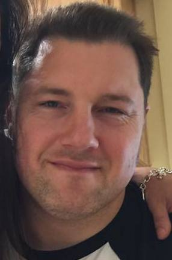

Peter Charles Danenberg Jr. b. 1978
Peter himself.
Living. As for every living relative on this site, the birth date is given by year only, and no current address is shown.
Also recorded as Peter Charles Danenberg.
Peter Charles Danenberg Jr. was born in 1978 in Los Angeles, California, United States (according to an online family tree)2, the son of Peter Valentins Danenbergs and Kathleen Diane Hall98,99. He married Genevieve Elisa Symanski Nelson on 10 Sep 2006 (according to the family's 2015 tree)100. He married Shayla Nadah Alamdari on 14 Feb 2011 (according to the family's 2015 tree)101.
Family
- Parents
- Peter Valentins Danenbergs b. 1942 and Kathleen Diane Hall b. 1947 documented
- Wife
- Genevieve Elisa Symanski Nelson b. 1988 · married on 10 Sep 2006100
- Children
- Mneme Gloria Danenberg b. 2007 documented
- Wife
- Shayla Nadah Alamdari b. 1985 · married on 14 Feb 2011101
- Children
- Kairos Coriolanus Danenberg b. 2012 documented
- Arete Þórisdóttir Danenberg b. 2013 documented
- Aletheia Saint-Saëns Danenberg b. 2014 documented
- Chronos Zarathustra Danenberg b. 2015 tradition
- Eos Adelaide Danenberg b. 2018 tradition
Life events
| Event | Date | Place and details |
|---|---|---|
| Born | 1978 | Los Angeles, California, United States According to an online family tree2 |
| Lived | bet 1978 and 1984 | La Cañada Flintridge, California, United States3 |
| Education | bet 1982 and 1995 | California, United States Taught himself computer programming around age 5 or 6 (~1982–1983, worked out from 'maybe about 5 or 6' given his 1977 birth year) after his mother Kathleen bought him a small personal computer, and through high school (~1995, worked out from 'through high school') taught himself Ancient Greek,…10 |
| Lived | 1 Jan 1988 | Pasadena, California, United States4 |
| Lived | bet 1988 and 1995 | Altadena, California, United States5 |
| Education | bet 1989 and 1991 | California, United States Grew up playing in his parents' laboratory ('I used to play in lab, so I'd invent all these games. But the problem is I just had to stay away from the radioactive stuff, right? I think that was the one rule I had') and entered middle-school / junior-high science fairs (~1989–1991, worked out from…11 |
| Note | bet 1990 and 2026 | California, United States Lifelong athlete in rugby, weightlifting, CrossFit, and soccer: played rugby from his teenage years (~1990, worked out from 'since I was a teenager' given his 1977 birth year) in the tight five (forwards) at a peak playing weight of ~315 lbs with a personal-record bench press of ~455 lbs ('I used…53 |
| Education | 27 Oct 1993 | Pasadena, California, United States Student and varsity football player (wide receiver/pass catcher: 1 reception for 27 yards, 27.0 avg) at Maranatha High School (Alpha League, Sierra Madre / Pasadena area, California) in autumn 1993 (sophomore year, age 15, prior to matriculating at USC in 1995); also listed in the 10 November 1993…12 |
| Education | bet 1995 and 2000 | Los Angeles, California, United States B.A., University of Southern California, 1995–2000. His CV lists the subjects as 'Computer Science, Classics, Philosophy, German, Piano'; the AI for Good speaker page says 'B.A. in Computer Science, Classics, Philosophy, and German from USC'; the Marquis Who's Who release says 'a bachelor's degree…13 |
| Education | bet 1995 and 2000 | Los Angeles, California, United States Undergraduate honors and activities at the University of Southern California (1995–2000): Phi Beta Kappa (Valedictorian), Renaissance Scholar, Dean's Scholar, Golden Key, Resident Honors Program, Thematic Option honors program, and Representative to the USC Board of Trustees (retrieved 2026-11-15).14 |
| Education | bet 1995 and 2004 | Germany Recounted with his parents at HealthTech Summit 2026 that he initially tried pre-med at USC before switching to Classics and Philosophy; traveled from his Classics study in Greece to Egypt over Christmas break; and left Harvard's graduate program in 2002 to move to the Schwarzwald (The University…15 |
| Education | bet 1997 and 2000 | England, United Kingdom European visiting study during his undergraduate years (1997–2000): University of Cambridge (Philosophy, 1997); International Center for Hellenic and Mediterranean Studies / College Year in Athens (Classics, 1998); Alliance Française (1999–2000); and Humboldt-Universität zu Berlin (Philosophy,…16 |
| Education | bet 2000 and 2008 | Cambridge, Massachusetts, United States Three doctoral programmes, none completed: Harvard University, Ph.D. candidate in Comparative Literature, 2000–2002; University of Freiburg, Ph.D. candidate in Philosophy, 2002–2004; University of Southern California, Ph.D. candidate in Computer Science, 2004–2008. The Marquis release adds…17 |
| Education | bet 2000 and 2008 | Oxford, England, United Kingdom His speaker biography for the Oxford Generative AI Summit (OxGen26, held 15–16 October 2026 at Jesus College, University of Oxford) explicitly identifies the three institutions where he pursued doctoral studies (dated 2000–2008 on his LinkedIn profile): 'He holds a B.A. in Computer Science,…18 |
| Education | bet 2002 and 2004 | Freiburg im Breisgau, Germany Ph.D. candidate in Philosophy at the University of Freiburg (Albert-Ludwigs-Universität Freiburg, Freiburg im Breisgau, Germany), 2002–2004.19 |
| Education | bet 2002 and 2008 | Germany Recounted in his December 2025 TEDxBoston talk ('How Classical Thinking Shaped Modern AI') that during his doctoral studies in philosophy in the Schwarzwald (The University of Freiburg, 2002–2004 on his LinkedIn profile), his advisor assigned him to write his dissertation in Latin on Thomas…20 |
| Education | bet 2002 and 2004 | Freiburg im Breisgau, Germany States in his July 2024 discussion with Sara Zare ('LLMs: The Language of Creativity, Power and Intelligence') that Martin Heidegger's 'Sein und Zeit' ('Being and Time') is one of his favorite books and that he moved to Freiburg (The University of Freiburg, 2002–2004 on his LinkedIn profile)…21 |
| Work | bet 2003 and 2005 | Developer, Wikimedia Foundation (2003–2005): created and maintained WikiTeX and mod_tex for rendering TeX/LaTeX, music, chess, and other mathematical and scientific notation in MediaWiki (retrieved 2026-11-15).22 |
| Work | bet 2005 and 2008 | Marina del Rey, California, United States Research Assistant, USC Information Sciences Institute, 2005–2008: multi-agent simulation environments for computational social science. Published with Stacy Marsella (BRiMS 2010, 'Data-Driven Coherence Models').23 |
| Work | bet 2005 and 2008 | Marina del Rey, California, United States Research Assistant, USC Information Sciences Institute (2005–2008): worked with Stacy Marsella and David Pynadath on Influence, a constraint-based system for crafting 'lines of persuasion' to modify people's beliefs and potentially behavior, and researched computational narrative in multi-agent…24 |
| Work | 28 Feb 2005 | Committed MediaWiki Subversion revision r7542 on 28 February 2005 (09:16 UTC) as author 'danenberg' ('Peter Danenberg <[email omitted]>'), releasing WikiTeX 1.0.1 in /trunk/wikitex/ and acknowledging USC computer-science lecturer Massoud Ghyam-khah (usc.edu) for support (retrieved…25 |
| Married | 10 Sep 2006 | with Genevieve Elisa Symanski Nelson According to the family's 2015 tree100 |
| Work | bet 2007 and 2011 | Los Angeles, California, United States Two roles at Response Genetics (Los Angeles, CA) recorded on his LinkedIn profile: Contractor (2007–2009), where he wrote a report-generation system presenting doctors with relevant data and literature based on a patient's genetic profile to guide cancer therapy decisions; and Senior Software…26 |
| Work | bet 2007 and 2011 | Los Angeles, California, United States Worked as a software engineer with his mother Kathleen Danenberg on two oncology-genomics startups she founded: Response Genetics (2007–2011 on his LinkedIn profile, where he states he was the sole engineer controlling 'everything from the lab robots to the HIPAA system to the report generation…27 |
| Note | bet 2007 and 2026 | Published the XHTML 1.0 genealogical website 'Danenberg (Gens Danenbergorum)' at danenberg.name ('Peter Danenberg <[email omitted]>', containing biographical entries dated 'as of 2007'), tracing the Danenberg, Sirlaks, Hall, Nelson, Fitz Gibbon, Urban, Leslie, McCabe, and Elfsten families…54 |
| Work | 2008 | Mountain View, California, United States Intern, Google, Inc., summer 2008: 'Created Roxygen, R's in-source documentation system; its successor, roxygen2, which I co-author, has over 21 million downloads.'28 |
| Work | bet 2008 and 2011 | Los Angeles, California, United States Senior Software Architect, Response Genetics (2008–2011) — his mother's company: 'Built, from scratch, a HIPAA-compliant lab system that took a tumor sample from intake through robotic pipetting and sequencing to a chemotherapy-response prediction for the oncologist. Worked with Roche, Pfizer, and…29 |
| Note | bet Oct 2008 and 2026 | Social-media profiles on X/Twitter, Instagram, and Facebook: on X (@klutometis, joined October 2008, 226 posts), his self-description is 'R, Beethoven and Scheme hacker with prominent sideburns'; on Instagram (@klutometis, 'Peter Charles Danenberg', 160 followers, 77 following, 4 posts) and…55 |
| Work | bet 2009 and 2013 | Palo Alto, California, United States Two stints at CK-12 Foundation (Palo Alto, CA): Programmer (2009–2010), where he wrote a MediaWiki → DocBook → LaTeX compiler in Scheme for collaborative textbook writing; and Software Developer (2012–2013), where he migrated a SQL-based analytics platform to Hadoop, extracted user-journeys from…30 |
| Note | bet 2009 and 2026 | Palo Alto, California, United States GitHub account klutometis (user id 85991), opened 18 May 2009; name 'Peter Danenberg'; location 'Palo Alto'; blog https://danenberg.ai; 141 public repositories, 9 gists, 181 followers. Bio: 'Senior SWE Google DeepMind · Research Fellow Oxford Ethics in AI · Built Gemini Canvas & Agent · co-created…56 |
| Work | 2010 | New Jersey, United States Contractor, Novartis (East Hanover, NJ, 2010): implemented simR, a simulator of pharmacokinetic effects in R for large-scale clinical trials (retrieved 2026-11-15).31 |
| Work | bet 2010 and Nov 2026 | Maintains 127 non-fork public repositories under his GitHub handle 'klutometis' (with repositories created from June 2010 through November 2026), including widely starred open-source projects in Scheme, Clojure, R, Python, Emacs Lisp, Racket, Rust, Kotlin, and TypeScript: 'aima' (Solutions to…32 |
| Note | bet 2010 and 2026 | Talks and publications, from his own CV: Danenberg & South, 'Inside the Frontier Labs', Imagination in Action, Silicon Valley (2026); 'LLMs: Mercenary or Citizen?', AI for Good Global Summit, Geneva (2026); 'Inversion of Control: Humans Working for AI', MIT Science Dinner and StartSe AI Festival,…57 |
| Work | bet 2011 and 2014 | Pasadena, California, United States Co-founder, CrossFit Crown City (2011–2014): 'Built the gym from scratch to 450 members across two locations; coached five classes a day, seven days a week.' 'Crown City' is Pasadena's nickname; the Marquis release also puts him in the Pasadena Rugby Football Club.33 |
| Work | bet 2011 and 2013 | Santa Monica, California, United States Senior Data Developer, TrueCar, Inc. (2011–2013): built the map-reduce platform that ingested dealership inventory and the pricing models behind TrueCar's consumer app.34 |
| Work | 2011 | San Francisco, California, United States Contractor, Genentech (South San Francisco, CA, 2011): implemented rJavax, an R-to-Java bridge, and integrated R with the Integrated Genome Browser (retrieved 2026-11-15).35 |
| Work | bet 2011 and 2012 | Santa Monica, California, United States Software Engineer, Factual Inc (Santa Monica, CA, 2011–2012): wrote a natural language interface to the Places API and a MapReduce job manager with dependency graphs and optimized scheduling (retrieved 2026-11-15).36 |
| Work | bet 2011 and 2014 | Pasadena, California, United States Co-founder, Brick Locust, LLC (Pasadena, CA, 2011–2014), the operating company of CrossFit Crown City: 'Grew the gym at CrossFit Crown City to 300 members and two locations; trained clients and competed in local CrossFit competitions.' (His CV gives peak membership as 450 members across two…37 |
| Work | bet 2011 and 2014 | Pasadena, California, United States Recounted on the Traction podcast (March 2026) that he discovered CrossFit after a woman invited him to try a newly opened CrossFit gym while he was playing tennis in Southern California at 275–285 lbs; he subsequently co-founded CrossFit Crown City with business partner Tom Scoball ('we put down…38 |
| Work | bet 2011 and 2014 | Pasadena, California, United States The two Pasadena locations of CrossFit Crown City (operated by Brick Locust, LLC, co-founded by Peter Danenberg and Tom Scoble in 2011) were at [address omitted] in Pasadena (in a brick building on a quiet side street alongside Scoble's Mother Magnolia, from which 'Brick Locust, LLC' took its…39 |
| Married | 14 Feb 2011 | with Shayla Nadah Alamdari According to the family's 2015 tree101 |
| Work | 27 Sep 2011 | Pasadena, California, United States Brick Locust, LLC (the California limited-liability company co-founded by Peter Danenberg and Tom Scoble to operate CrossFit Crown City in Pasadena, CA) was filed with the California Secretary of State on 27 September 2011, five weeks before CrossFit Crown City opened its doors at 1830 Locust…40 |
| Work | bet 31 Oct 2011 and 7 Nov 2011 | Pasadena, California, United States Profiled with co-founder Tom Scoble in the 7 November 2011 Altadena Patch article 'Fitness-Loving Altadena Residents Taking Hobby Professional' one week after opening CrossFit Crown City in a brick building at 1830 Locust Avenue, Pasadena (just south of the 210 Freeway off Allen Avenue, alongside…41 |
| Lived | Nov 2011 | Altadena, California, United States6,7 |
| Work | 2012 | Texas, United States Director of New Application Development, Caris Life Sciences (Irving, TX, 2012): implemented an expert system which, given gene expression and mutations, predicted which chemotherapies a patient might respond to (retrieved 2026-11-15).42 |
| Note | bet 2012 and 2017 | California, United States Organizer of the Computer Science Reading Group (2012–2017), a weekly meetup for local programmers to work through Andrew Ng's lectures on LLMs and seminal texts such as 'Artificial Intelligence: a Modern Approach' (AIMA) (retrieved 2026-11-15).58 |
| Note | 2012 | Pasadena, California, United States Competed in the 2012 CrossFit Games Open (Competitor ID 28402, Men's Individual division, Southern California Region, representing CrossFit Crown City, Affiliate ID 3241), placing 265th overall in Southern California (1,939 points) and 3,242nd Worldwide across all five workouts: Workout 12.1: 105…59 |
| Note | bet 23 May 2012 and 20 Oct 2023 | Mountain View, California, United States Organizer of the 'Computer Science Reading Group' Meetup (meetup.com/la-computer-science-reading-group, founded 23 May 2012, based in Mountain View, CA; 2,306 members, 255 past events, 4.7 rating across 141 reviews): 'We'd like to work through some of the seminal texts in computer science that…60 |
| Lived | bet 2013 and Sep 2022 | Mountain View, California, United States8 |
| Work | bet 2013 and 2024 | Mountain View, California, United States Senior Software Engineer, Google, Inc., 2013–2024. Bard Extensions (the tool-calling reasoning loop; launched to 1.8 million daily users) and Google Assistant (neural-semantic models serving about 120 million queries a day; C++ backend; training and evaluation automated for 54 models in 18…43 |
| Work | bet 2013 and Oct 2024 | Mountain View, California, United States Detailed three-stage progression at Google (2013–October 2024) from his LinkedIn profile: (1) Data Infrastructure Engineer (2013–2016): designed and built an A/B experimentation platform for Drive, Gmail, and Hangouts, including a framework for attribution analysis of customer satisfaction; (2)…44 |
| Note | bet Oct 2013 and 2026 | Pasadena, California, United States Youth coach, Pasadena Rugby Football Club (from October 2013): volunteered coaching youth rugby for the under-8s, under-10s, and under-12s divisions (retrieved 2026-11-15).61 |
| Note | bet 2014 and 2026 | Mountain View, California, United States Founded 'The Salon' around 2014 at Google ('I started this thing about 12 years ago called the Salon, and it was just this like monthly get-together of musicians') and described his three successive ~10-year classical piano memorization projects: Bach's Well-Tempered Clavier Book I, Beethoven's…62 |
| Note | bet Apr 2014 and Feb 2020 | Mountain View, California, United States Listed under Organizations on his LinkedIn profile as 'President, Coach, Player' of the Google Rugby Football Club from April 2014 to February 2020 (matching his February 2020 rugby retirement after a double concussion). In a 14 March 2016 thread on r/rugbyunion ('TIL Google has their own rugby…63 |
| Note | bet Apr 2014 and Feb 2020 | Mountain View, California, United States The official Google Rugby Football Club pages on Facebook (facebook.com/googlerugby, 969 followers) and Instagram (@googlerugby, 451 followers, 331 following, 49 posts) describe the club (where he served as President, Coach, and Player from April 2014 to February 2020 on his LinkedIn Organizations…64 |
| Note | 18 Sep 2015 | Rīga, Vidzeme, Latvia Registered as a dual citizen of Latvia and the United States in September 2015; assigned Latvijas personas kods [ID number omitted]. Issued Latvian citizen passport Nr. [ID number omitted] on 18 September 2015 by PMLP Rīgas 9. nodaļa (valid until 17 September 2025; height 193 cm), transmitted via the Embassy of…65 |
| Work | 2016 | Authored, maintained, or ported 30 extension libraries ('eggs') in the Chicken Scheme 4 repository (eggs.call-cc.org/4/): aima (support for Russell & Norvig's AIMA), alist-lib, animation, call-with-environment-variables, call-with-query, call-with-sqlite3-connection, cock, cock-utils,…45 |
| Note | bet 2016 and 18 Oct 2026 | Classical pianist and recording project published at danenberg.music ('Peter Danenberg at the piano: Working through Bach's Well-Tempered Clavier, Book II, and Beethoven's thirty-two piano sonatas, more or less in order, and recording as I go'). As of 18 October 2026, the site catalogues 51…66 |
| Work | 2022 | Mountain View, California, United States Recounted at TEDxBoston (December 2025) that in 2022, before ChatGPT went viral, he was one of roughly six engineers at Google on an early six-month internal LLM project codenamed 'Gelato', prototyping early LLM agents in Gmail and Google Docs and an automated day-trading agent before the project…46 |
| Note | bet 22 Sep 2022 and 2026 | Mountain View, California, United States Organizer of the 'Bay Area Salon' Meetup group in Mountain View, California (meetup.com/bay-area-salon, founded 22 September 2022, 46 members): 'Bay Area Salon is opportunity for musicians, dancers, poets to get together and play, sing, perform; and anyone else who would like to come by and…67 |
| Work | bet 2023 and 2024 | Palo Alto, California, United States Speaker profile at sessionize.com/peter-danenberg ('Senior Software Engineer, Google (Bard), Palo Alto, California, United States', ~2023–2024, worked out from the Google 'Bard' product branding and bardmeetup.ai / bard.dog domains), recording his work on infrastructure and quality for Bard…47 |
| Note | bet Oct 2023 and Nov 2026 | Updated chronological record of 78 external speaking engagements (October 2023 – November 2026) and 82 biweekly Gemini Meetups (~17,958 RSVPs) published on danenberg.ai/speaking, including seven engagements in October–November 2026 not present in the first-pass snapshot: (#72) 'Germany at the…68 |
| Note | bet Dec 2023 and Jan 2026 | Mountain View, California, United States Founded the Google Rugby Football Club ('So I made this thing called the Google Rugby Football Club. And it was great because we had such a diverse crew. I just remember when we started, there was people from Ireland and France and Israel and Samoa and Tonga') and attended Toastmasters meetings /…69 |
| Work | bet 2024 and 2026 | Palo Alto, California, United States Senior Software Engineer, Google DeepMind, since 2024. Zero-to-one prototyping for Gemini: Harness, Mneme, Gemini Agent (the computer-use prototype that shipped), Gemini Canvas (the artifact prototype that shipped), Little PAIPer (with Peter Norvig), and the Gemini Meetup, a biweekly workshop…48 |
| Work | bet Oct 2024 and 2026 | Mountain View, California, United States Detailed engineering systems at Google DeepMind (Senior Software Engineer, from October 2024) recorded on his LinkedIn profile: member of the Gemini 1.0 Founding Team (arXiv:2312.11805), leading code generation, logical reasoning, and instruction following; built end-to-end systems that shipped as…49 |
| Lived | bet 2025 and 2026 | Palo Alto, California, United States9 |
| Note | bet 2025 and 2026 | Published the essay 'My Last Conversation with GPT-5: A story about mugs, mythology, and why I can never trust GPT-5 again' on danenberg.ai, recounting how he tested GPT-5 on Homer's Iliad 18.417–421 (Hephaestus's golden handmaidens, χρύσειαι ἀμφίπολοι) and caught it fabricating a non-existent…70 |
| Note | bet Jan 2025 and Feb 2026 | Mountain View, California, United States Founder and organizer of the Gemini Meetup (co-organized with Justin Woo and Jay Yao in Mountain View, CA). The '2025 in Review' site (2025.geminimeetup.ai, covering January 2025 – February 2026) reports 8,317 members on the calendar, 34 events in 14 months (28 Friday meetups and 6 Friday…71 |
| Note | bet 2025 and 2026 | Oxford, England, United Kingdom Profiled on the University of Oxford Institute for Ethics in AI website (oxford-aiethics.ox.ac.uk/peter-danenberg), which describes three of his independent humanities-and-AI research projects alongside his work with Philipp Koralus and Edward Harcourt at Oxford's HAI Lab: (1) an LLM pipeline that…72 |
| Note | 2025 | Palo Alto, California, United States Featured on page 412 of 'Millennium: A Marquis Who's Who Magazine' (18th Edition), which notes that 'Outside his technical work, he enjoys playing rugby, soccer, and ultimate frisbee and is an avid pianist and event producer who has hosted monthly Google employee concerts for more than a decade'…73 |
| Note | 2025 | United States Competed in the 2025 CrossFit Games Open (Competitor ID 2846311, Men 45–49 division, North America West), placing 5,251st Worldwide in Men 45–49 (1,257th in North America West; 2,455th in the United States; 61,804th overall Men Worldwide) with Rx scores across all three workouts: Workout 25.1: 200…74 |
| Note | 15 Jan 2025 | Palo Alto, California, United States Selected for inclusion in Marquis Who's Who, announced 15 January 2025 with a Palo Alto dateline. The release adds biographical detail not on his own CV: memberships of the Pasadena Rugby Football Club, Chabad Palo Alto and the Google Rugby Football Club; that he plays piano and spends time 'with…75 |
| Note | 18 May 2025 | California, United States Delivered the TEDxCSTU talk 'Competence in the Age of LLMs' at California Science & Technology University on 18 May 2025 (published on the TEDx Talks YouTube channel 18 August 2025, organized by Leni Jin), introducing the distinction between poietic (the art of making) and peirastic (the art of…76 |
| Note | 17 Jun 2025 | England, United Kingdom Delivered the inaugural Margaret Boden Annual Lecture in Interdisciplinary AI ('Thinking Creatively and Critically in the Age of LLMs') at the Jubilee Lecture Theatre, University of Sussex, on Tuesday 17 June 2025 (10:00 AM – 12:00 PM), introduced by Executive Dean Ingrid Woolard and Professor…77 |
| Note | 19 Jun 2025 | Oxford, England, United Kingdom Delivered the alumni lecture "'The Future of AI' with Google's Peter Danenberg" in The Auditorium at Magdalen College, University of Oxford, on Thursday 19 June 2025 (5:00–6:30 pm) (retrieved 2026-11-15).78 |
| Note | 1 Jul 2025 | Featured in John Werner's Forbes column 'Are We Speaking To Sentient AI? And Is That Good?' (1 July 2025), which quotes his analysis of Plato's Seventh Letter (the 'divine spark' that leaps from soul to soul through sustained philosophical questioning), Nietzsche's Zarathustra, and the design of…79 |
| Note | 30 Sep 2025 | Featured in Larry Dignan's Constellation Research report 'Google DeepMind's Danenberg on emerging LLM trends to watch' (published 30 September 2025, following his conversation with R 'Ray' Wang at Constellation Research's AI Forum), discussing ambient LLMs that preserve user flow, constellations…80 |
| Work | bet Nov 2025 and 2026 | Oxford, England, United Kingdom Senior Research Fellow, University of Oxford (Institute for Ethics in AI · Human-Centered AI Lab, from November 2025 per LinkedIn; 2026– on his CV): co-authoring the monograph 'Praeter-Life' (amphipoloi.ai) on ancient automata and LLM companionship with Prof. Philipp Koralus — built on a…50 |
| Note | 4 Nov 2025 | Oxford, England, United Kingdom Delivered the public Expert Insight Seminar 'Thinking in the Age of AI' for the University of Oxford Institute for Ethics in AI at the Cheng Kar Shun Digital Hub, Jesus College, Oxford, on Tuesday 4 November 2025 (5–7 pm). The published Oxford speaker biography notes that 'As a child he taught…81 |
| Note | Dec 2025 | Boston, Massachusetts, United States Delivered the TEDxBoston talk 'How Classical Thinking Shaped Modern AI' in December 2025 (published on the TEDx Talks YouTube channel 2 February 2026); the published speaker biography notes that 'He studied ancient languages and philosophy, including intensive work on Aristotle and Thomas Aquinas,…82 |
| Work | 2026 | Oxford, England, United Kingdom Senior Research Associate / Senior Research Fellow, Oxford HAI Lab — the Oxford Institute for Ethics in AI — from 2026, with Philipp Koralus and Edward Harcourt, on whether LLMs can carry out goal-directed, truth-seeking inquiry with people. Projects: Aletheia (an AI philosophy tutor) and…51 |
| Note | 2026 | Identifiers and published contact details: site danenberg.ai and peter.danenberg.ai; email [email omitted] (LinkedIn contact info) and [email omitted] (CV); telephone [phone omitted] (CV); LinkedIn https://www.linkedin.com/in/peterdanenberg (member urn 18793060, 5,886 followers,…83 |
| Note | 2026 | Seven languages listed on his LinkedIn profile (besides English): French, German, Ancient Greek (to 1453), Hebrew, Latin, Latvian, and Sanskrit (retrieved 2026-11-15).84 |
| Note | Jan 2026 | San Francisco, California, United States Speaker at HealthTech Week & Summit 2026 (San Francisco, during JPM Healthcare Conference week, January 2026), where he participated in the family panel 'Meet the Danenbergs: From Wet-Lab to Code' (hosted by Aiify.io) and is listed on the official speakers page as 'Peter Danenberg, Sr. Software…85 |
| Note | 2026 | Palo Alto, California, United States Describes a nightly film-watching ritual with his wife, having watched through the entire AFI Top 100 movie list and subsequently working through the Rotten Tomatoes 300 list (retrieved 2026-11-15).86 |
| Note | 2026 | California, United States Built 'Strike Fetish — Stanford Pickup Soccer Strike Analysis' (strikefetish.com) and the voice/SMS 'Strike Hotline' ((650) 728-4013) analyzing the Stanford pickup-soccer group (2024-08-26 → 2026-09-26); in the published statistical report (strikefetish.com/report.html), he is recorded as a…87 |
| Note | 21 Jan 2026 | Switzerland Interviewed in Davos, Switzerland on 21 January 2026 by physicist Dr. Alex Wissner-Gross for 'The Innermost Loop' (published 28 January 2026 as 'A Conversation with Peter Danenberg'), discussing his 24-to-48-hour rapid prototyping cycle for Gemini 2.5 and 3 at Google DeepMind, building Gemini…88 |
| Note | 7 Feb 2026 | Featured in John Werner's Forbes column 'The Enigmatic User: Figuring Out Human Desires In The Age Of AI' (7 February 2026), profiling a dialogue between Peter Danenberg and James Rubin on the gap between product-manager hypotheses and emergent user behavior, how products like NotebookLM conjure…89 |
| Note | 17 Feb 2026 | Featured in Vala Afshar's ZDNet column 'What Aristotle and Socrates can teach us about using generative AI: A senior Google engineer reminds us that AI models should help us learn how to think, not what to think' (17 February 2026), profiling his TEDx talk 'Competence in the Age of LLMs', his…90 |
| Note | 1 Apr 2026 | Featured guest on the Traction podcast hosted by Ray Walia ('He Plays Bach Every Night After Building AI All Day. Here's Why. | Peter Danenberg | Traction', recorded March 2026, published 1 April 2026, 16,781 views as of 15 November 2026), discussing his nightly practice of J. S. Bach at the…91 |
| Note | May 2026 | California, United States Speaker at PyCon US 2026 in Long Beach, California (produced by the Python Software Foundation), presenting 'Vibe Cloud to production with Gemini'; his PyCon speaker profile notes that in addition to Gemini Agent and Gemini Canvas, he spearheaded 'the AR/XR integrations of Project Astra' at Google…92 |
| Note | 7 May 2026 | Venice, Italy Featured speaker and published biography at LAS Art Foundation (Berlin/Venice), participating in the panel discussion 'AI: Intentions, Protocols and Power' (part of 'The Phantom Combatants' at Sala Lettura, Ateneo Veneto, Venice, on Thursday 7 May 2026, 14:30–17:00, organized by Oxford HAI Lab,…93 |
| Note | 13 May 2026 | England, United Kingdom Delivered a keynote and Q&A to the students at Harrow School on 13 May 2026 titled 'AI and Education: Using Powerful Tools Wisely', published by Harrow School (@harrow.school): 'Peter's short keynote was followed by a lively Q&A session, allowing boys to engage directly with his views on how AI…94 |
| Work | bet 15 Jun 2026 and 24 Jun 2026 | Author and CRAN maintainer of two additional R packages besides roxygen and roxygen2: 'functional' ('Curry, Compose, and Other Higher-Order Functions', providing Curry, CurryL, Compose, Identity, Negate, and Swap; v0.7 published 24 June 2026, github.com/klutometis/R-functional) and 'lisp'…52 |
| Note | bet 14 Sep 2026 and 15 Sep 2026 | Mountain View, California, United States Co-organized and spoke across both days of the Imagination in Action Silicon Valley Summit at Google Bay View (14–15 September 2026), moderating 'Inside the Frontier Labs', 'When AI Can Sense the World', and the 3.5-hour 'Gemini Workshop' on 14 September, and leading the morning athletic workout…95 |
| Note | 16 Sep 2026 | Published the research archive 'Praeter-Life — ancient quasi-humans and the question of LLM companionship' at amphipoloi.ai ('Praeter-Life · Peter Danenberg · built 2026-09-16'), presenting 30 curated ancient made-beings across 14 traditions (and 185 shortlisted specimens across 30 families) mined…96 |
| Note | According to an online family tree97 | |
| Divorced | with Genevieve Elisa Symanski Nelson According to the family's 2015 tree102 |
Photographs


Records


![The full page of the record, with the part cited outlined in red: CRAN Package Check Results & DESCRIPTION files for Maintainer Peter Danenberg <[email omitted]>](../../records/evidence/s-living-peter-charles-danenberg-bio2-cran-package-7a0261cb232b/page-1.jpg)

Sources
- MyHeritage family tree 'Dzimta' of Peter's third cousin (his family site), member GEDCOM export of 26 Oct 2026, I500167 (person-6500167), GEDCOM lines 10273–10329.
NAME Peter Charles /Danenberg/
- MyHeritage family tree 'Dzimta' of Peter's third cousin (his family site), member GEDCOM export of 26 Oct 2026, I500167 (person-6500167), GEDCOM lines 10273–10329.
BIRT · 1978 · Los Angeles, California, USA
His record match: ASV Publisko Ierakstu Indekss, https://www.myheritage.lv/research/collection-10220/asv-publisko-ierakstu-indekss?itemId=706707761&action=showRecord: 'Peter C Danenberg | Dzimšana: 1978'. His record match: Kalifornija Dzimšanas, 1905 - 1995, https://www.myheritage.lv/research/collection-10070/dzim%C5%A1anas-ieraksti?itemId=13985481&action=showRecord: 'Peter Charles Danenberg | Dzimums: Vīrietis | Dzimšana: 1978 - Los Angeles, California, USA | Mātes pirmslaulības uzvārds: Hall'.
- [address omitted], La Canada, California 91011-3713 & Glendale High School Class of 1984.
Kathleen Diane Danenberg … Iespējamie radinieki: VārdsDzimšanaPeter Valentin Danenberg1942.gada [day omitted]Liga Irene Danenberg1966.gada [day omitted]Peter C Danenberg … [address omitted], USA … Glendale HS Class of '84 (California) · Liga Danenberg
Childhood home at [address omitted], La Cañada Flintridge, Los Angeles County, California with his parents and sister Līga (who graduated from nearby Glendale High School in 1984) before the family moved to Pasadena by 1 January 1988.
- [address omitted], Pasadena, California 91101-3903 (1 Jan 1988).
[address omitted], PasadenaCalifornia 91101-3903, USA1988.gada 1. Jan
Lived with his parents in Pasadena, Los Angeles County, California on 1 January 1988 (at [address omitted], Pasadena) before the family moved to nearby Altadena.
- [address omitted], Altadena, California 91001-1527 & USC B.A. (1995–2000).
[address omitted], AltadenaCalifornia 91001-1527, USA … 1995–2000 USC B.A., Computer Science, Classics, Philosophy, German, Piano
Lived with his parents and sister at his parents' longtime home at [address omitted], Altadena, Los Angeles County, California before beginning undergraduate studies at USC in 1995.
- Peter C Danenberg — [address omitted], Altadena, California 91001-2729 (11 May 2006).
Peter C Danenberg | Dzimšana: 1978 | Iespējamie radinieki: Genevieve E Danenberg 1988, Kathleen D Danenberg | Dzīves vietas: [address omitted], USA, 11. Mai 2006
Recorded in the US Public Records Index at [address omitted], Altadena, California 91001-2729 on 11 May 2006 with his first wife Genevieve E. Danenberg (whom he married on 10 September 2006, and with whom he had daughter Mneme in 2007) and associated relative Kathleen D. Danenberg.
- Fitness-Loving Altadena Residents Taking Hobby Professional (Dan Abendschein, Nov 7, 2011).
Two Altadena residents have started a CrossFit gym in Pasadena after deciding that driving to Monrovia to work out was too far. … Danenberg and Scoble, both Altadena residents, just opened a local branch of the CrossFit franchise last week.
Described in the 7 November 2011 Altadena Patch article 'Fitness-Loving Altadena Residents Taking Hobby Professional' as a resident of Altadena, California ('Danenberg and Scoble, both Altadena residents, just opened a local branch of the CrossFit franchise last week') (retrieved 2026-11-15; corroborating the [address omitted], Altadena residence recorded in public-record aggregators).
- Building sandcastles in December — Mountain View resident Shayla Danenberg and family.
This past summer, Mountain View resident Shayla Danenberg created a to-do list of state beaches and parks to visit with her husband and their four children … The Danenberg family — Peter, holding Arete, 2, and Chronos, 5 months, and Shayla, holding Aletheia, 18 months, and Kairos, 3
Moved with his wife Shayla and their children from Pasadena to Mountain View, Santa Clara County, California after joining Google in 2013; the 17 December 2015 Palo Alto Weekly feature and Shayla's Etsy profile describe the family as Mountain View residents before their September 2022 move to [address omitted], Palo Alto.
- Peter Danenberg — profile.
"location": "Palo Alto, California, United States"
Palo Alto, California: his LinkedIn location, his GitHub location, and the dateline of the January 2025 Marquis release. (Earlier, Pasadena — CrossFit Crown City and the Pasadena Rugby Football Club.)
- Google's Gemini AI: Exclusive Interview with Top Engineer Peter Danenberg.
[0:00:39] Peter Danenberg: So I've always loved languages, and so when I was a kid, this is through high school, I taught myself Greek, Latin, and Hebrew, and some Sanskrit and stuff like that. … when I was a kid, maybe about 5 or 6, my mom bought me this little computer. And I taught myself how to program.
Taught himself computer programming around age 5 or 6 (~1982–1983, worked out from 'maybe about 5 or 6' given his 1977 birth year) after his mother Kathleen bought him a small personal computer, and through high school (~1995, worked out from 'through high school') taught himself Ancient Greek, Latin, Hebrew, and some Sanskrit (retrieved 2026-11-15).
- Meet the Danenbergs: From Wet-Lab to Code (@30:17).
[0:31:23] Peter Danenberg: I mean, for me, just, I used to play in lab, so I'd invent all these games. But the problem is I just had to stay away from the radioactive stuff, right? I think that was the one rule I had. … [0:34:29] Peter Danenberg: I think we did a couple science fairs when I was in middle school with gene expression or something. [0:34:54] Speaker C: You could use the PCR to compare human and mouse. [0:34:59] Peter Danenberg: Oh yeah, human and mouse DNA. And so it was this nice little, I don't know, junior high project
Grew up playing in his parents' laboratory ('I used to play in lab, so I'd invent all these games. But the problem is I just had to stay away from the radioactive stuff, right? I think that was the one rule I had') and entered middle-school / junior-high science fairs (~1989–1991, worked out from 'when I was in middle school' and 'junior high project' given his 1977 birth year) with projects using polymerase chain reaction (PCR) to compare human and mouse DNA and gene expression (recounted by Peter and his father Peter V. Danenberg at HealthTech Summit 2026, retrieved 2026-11-15).
- High School Report (Individual Leaders — Receiving), Pasadena Star-News (Pasadena, California), 27 October 1993, p. 22; 10 November 1993, p. 24; 17 November 1993, p. 24.
RECEIVING Player, School No. Yds Ave TD ... Isaac Chung, Mara. 3 73 24.3 0 Londell Ramsey, Marsh. 2 37 18.5 0 Ross Driscoll, St Frn 2 10 5.0 0 Peter Danenberg, Mara. 1 27 27.0 0 Ryan Conway, St Fran. 1 11 11.0 0
Student and varsity football player (wide receiver/pass catcher: 1 reception for 27 yards, 27.0 avg) at Maranatha High School (Alpha League, Sierra Madre / Pasadena area, California) in autumn 1993 (sophomore year, age 15, prior to matriculating at USC in 1995); also listed in the 10 November 1993 and 17 November 1993 Pasadena Star-News High School Report.
- Peter Danenberg — CV, Education.
1995–2000 USC B.A., Computer Science, Classics, Philosophy, German, Piano
B.A., University of Southern California, 1995–2000. His CV lists the subjects as 'Computer Science, Classics, Philosophy, German, Piano'; the AI for Good speaker page says 'B.A. in Computer Science, Classics, Philosophy, and German from USC'; the Marquis Who's Who release says 'a bachelor's degree in classics, philosophy, piano, and German at the University of Southern California in 2000'. He was also Representative to the USC Board of Trustees (LinkedIn education blurb).
- Peter Danenberg — Education: University of Southern California.
"degree": "Bachelors, Classics, Philosophy, Piano, German", "school": "University of Southern California", "start": "1/1/1995", "end": "1/1/2000", "activities": "Golden Key, Representative to the USC Board of Trustees, Renaissance Scholar, Phi Beta Kappa (Valedictorian), Dean’s Scholar, Resident Honors, Thematic Option"
Undergraduate honors and activities at the University of Southern California (1995–2000): Phi Beta Kappa (Valedictorian), Renaissance Scholar, Dean's Scholar, Golden Key, Resident Honors Program, Thematic Option honors program, and Representative to the USC Board of Trustees (retrieved 2026-11-15).
- Meet the Danenbergs: From Wet-Lab to Code (@30:17).
[0:32:33] Speaker A [Kathleen Danenberg]: we were going to Greece and then from USC. And then he said, uh, gee, you want to go to Egypt during the Christmas break or something? Went over and sat on the Nile. … was at Harvard and had to, uh, he had to leave Harvard because they wouldn't let him study under this one guy that he wanted study under, so he went to Germany to do that. So there he was up on the mountain in— where was that? [0:33:13] Peter Danenberg: In the Schwarzwald. … [0:35:13] Peter Danenberg: Yeah, I mean, I tried the pre-med thing and it just didn't work. … [linkedin-peterdanenberg-full.json]: University of Southern California (1/1/1995–1/1/2000); Harvard University (1/1/2000–1/1/2002); The University of Freiburg (1/1/2002–1/1/2004)
Recounted with his parents at HealthTech Summit 2026 that he initially tried pre-med at USC before switching to Classics and Philosophy; traveled from his Classics study in Greece to Egypt over Christmas break; and left Harvard's graduate program in 2002 to move to the Schwarzwald (The University of Freiburg) in Germany because Harvard would not let him study under the specific scholar he wished to work with ('he had to leave Harvard because they wouldn't let him study under this one guy that he wanted study under, so he went to Germany to do that. So there he was up on the mountain in … the Schwarzwald. … He said, well, I'm not going to stay at Harvard just so you can banter around I'm at Harvard'), where he acquired near-native German fluency while reading Nietzsche and German literature (retrieved 2026-11-15).
- Peter Danenberg — Education (Cambridge, ICHAMS, Alliance Française, Humboldt-Universität).
{"degree": "Philosophy", "school": "Humboldt-Universität zu Berlin", "start": "1/1/2000", "end": "1/1/2000"}, {"school": "Alliance Française", "start": "1/1/1999", "end": "1/1/2000"}, {"degree": "Classics", "school": "International Center for Hellenic and Mediterranean Studies", "start": "1/1/1998", "end": "1/1/1998"}, {"degree": "Philosophy", "school": "University of Cambridge", "start": "1/1/1997", "end": "1/1/1997"}
European visiting study during his undergraduate years (1997–2000): University of Cambridge (Philosophy, 1997); International Center for Hellenic and Mediterranean Studies / College Year in Athens (Classics, 1998); Alliance Française (1999–2000); and Humboldt-Universität zu Berlin (Philosophy, 2000) (retrieved 2026-11-15).
- Peter Danenberg — CV, Education.
2004–2008 USC Ph.D. candidate, Computer Science / 2002–2004 University of Freiburg Ph.D. candidate, Philosophy / 2000–2002 Harvard University Ph.D. candidate, Comparative Literature
Three doctoral programmes, none completed: Harvard University, Ph.D. candidate in Comparative Literature, 2000–2002; University of Freiburg, Ph.D. candidate in Philosophy, 2002–2004; University of Southern California, Ph.D. candidate in Computer Science, 2004–2008. The Marquis release adds coursework in philosophy at the University of Cambridge and in classics at the International Center for Hellenic and Mediterranean Studies, coursework in France and Germany, 'a research fellowship in comparative literature at Harvard University', and 'in 2004 he returned to the University of Southern California to earn a master's degree in computer science' — his LinkedIn also lists a Master's in Computer Science. His Harvard alumni address, [email omitted], is on the CV.
- Peter Danenberg — OxGen AI Summit.
He holds a B.A. in Computer Science, Classics, Philosophy, and German from USC and pursued doctoral studies at Harvard, Freiburg, and USC. … OxGen26 took place October 15–16, 2026 · Jesus College, University of Oxford … [linkedin-peterdanenberg-full.json]: Harvard University (1/1/2000–1/1/2002); The University of Freiburg (1/1/2002–1/1/2004); University of Southern California (start 1/1/2004) / Information Sciences Institute (1/1/2005–1/1/2008)
His speaker biography for the Oxford Generative AI Summit (OxGen26, held 15–16 October 2026 at Jesus College, University of Oxford) explicitly identifies the three institutions where he pursued doctoral studies (dated 2000–2008 on his LinkedIn profile): 'He holds a B.A. in Computer Science, Classics, Philosophy, and German from USC and pursued doctoral studies at Harvard, Freiburg, and USC' (retrieved 2026-11-15).
- Peter Danenberg — CV, Education.
2002–2004 University of Freiburg Ph.D. candidate, Philosophy
Ph.D. candidate in Philosophy at the University of Freiburg (Albert-Ludwigs-Universität Freiburg, Freiburg im Breisgau, Germany), 2002–2004.
- How Classical Thinking Shaped Modern AI | Peter Danenberg | TEDxBoston.
[0:00:30] Peter Danenberg: so my background is in classics and philosophy, and I found myself at some point in the Schwarzwald, you know, the Black Forest, doing a dissertation in Latin, right? I remember my advisor said, listen, Peter, there's 3 languages in the books. You can do this thing in German, English, Latin. You gotta do it in Latin, and it's gonna be on Thomas Aquinas and Aristotle. Anyway, at some point I'm like, what the hell am I doing here, right? And so I, instead of doing my dissertation, I was programming about 12 to 14 hours a day. So I thought, you know what, I'm gonna come back to the States, Somehow I got into a PhD, my third PhD that I dropped out of, and sort of went into Google. … [linkedin-peterdanenberg-full.json]: The University of Freiburg (1/1/2002–1/1/2004); Wikimedia Foundation | Created and maintained WikiTeX and mod_tex (1/1/2003–1/1/2005); Information Sciences Institute (1/1/2005–1/1/2008)
Recounted in his December 2025 TEDxBoston talk ('How Classical Thinking Shaped Modern AI') that during his doctoral studies in philosophy in the Schwarzwald (The University of Freiburg, 2002–2004 on his LinkedIn profile), his advisor assigned him to write his dissertation in Latin on Thomas Aquinas and Aristotle ('my advisor said, listen, Peter, there's 3 languages in the books. You can do this thing in German, English, Latin. You gotta do it in Latin, and it's gonna be on Thomas Aquinas and Aristotle'), but instead of writing the dissertation he found himself programming 12 to 14 hours a day (creating WikiTeX and mod_tex in 2003–2005 on his LinkedIn profile), returned to the United States, and entered a third PhD program (2004–2008 at USC/ISI) before leaving to pursue software engineering and natural language processing (retrieved 2026-11-15).
- SZA: Peter Danenberg and Sara Zare — LLMs: The Language of Creativity, Power and Intelligence.
[0:50:51] Peter Danenberg: Sein und Zeit, you know, Being and Time, one of my favorite books. I actually, I went to study in Freiburg just, just because I wanted to study Heidegger. … [linkedin-peterdanenberg-full.json]: Philosophy | The University of Freiburg | 1/1/2002–1/1/2004
States in his July 2024 discussion with Sara Zare ('LLMs: The Language of Creativity, Power and Intelligence') that Martin Heidegger's 'Sein und Zeit' ('Being and Time') is one of his favorite books and that he moved to Freiburg (The University of Freiburg, 2002–2004 on his LinkedIn profile) specifically because he wanted to study Heidegger ('Sein und Zeit, you know, Being and Time, one of my favorite books. I actually, I went to study in Freiburg just, just because I wanted to study Heidegger') (retrieved 2026-11-15).
- Peter Danenberg — Work Experience: Wikimedia Foundation.
"company": "Wikimedia Foundation", "position": "Developer", "description": "Created and maintained WikiTeX and mod_tex.", "start": "1/1/2003", "end": "1/1/2005"
Developer, Wikimedia Foundation (2003–2005): created and maintained WikiTeX and mod_tex for rendering TeX/LaTeX, music, chess, and other mathematical and scientific notation in MediaWiki (retrieved 2026-11-15).
- Peter Danenberg — CV.
Research Assistant Information Sciences Institute (2005–2008). Developed multi-agent simulation environments for computational social science.
Research Assistant, USC Information Sciences Institute, 2005–2008: multi-agent simulation environments for computational social science. Published with Stacy Marsella (BRiMS 2010, 'Data-Driven Coherence Models').
- Peter Danenberg — Work Experience: Information Sciences Institute.
"company": "Information Sciences Institute", "position": "Research Assistant", "location": "Marina del Rey, CA", "description": "Worked with Stacy Marsella and David Pynadath on Influence, a constraint-based system for crafting \"lines of persuasion\" to modify people's beliefs and potentially behavior; researched computational narrative in multi-agent sims.", "start": "1/1/2005", "end": "1/1/2008"
Research Assistant, USC Information Sciences Institute (2005–2008): worked with Stacy Marsella and David Pynadath on Influence, a constraint-based system for crafting 'lines of persuasion' to modify people's beliefs and potentially behavior, and researched computational narrative in multi-agent simulations (retrieved 2026-11-15).
- r7542 MediaWiki - Code Review archive (28 February 2005).
Repository: MediaWiki / Revision: r7542 / Date: 09:16, 28 February 2005 / Author: danenberg / Comment: catachrestical escape; docs … +WikiTeX 1.0.1 LICENSE / Peter Danenberg <[email omitted]> … Massoud Ghyam-khah support usc.edu
Committed MediaWiki Subversion revision r7542 on 28 February 2005 (09:16 UTC) as author 'danenberg' ('Peter Danenberg <[email omitted]>'), releasing WikiTeX 1.0.1 in /trunk/wikitex/ and acknowledging USC computer-science lecturer Massoud Ghyam-khah (usc.edu) for support (retrieved 2026-11-15).
- Peter Danenberg — Work Experience: Response Genetics.
{"company": "Response Genetics", "position": "Senior Software Architect", "location": "Los Angeles, CA", "description": "Implemented a HIPAA-compliant laboratory information system from scratch, including doctor’s portal.", "start": "1/1/2010", "end": "1/1/2011"}, {"company": "Response Genetics", "position": "Contractor", "location": "Los Angeles, CA", "description": "Wrote a report-generation system which, based on a patient's genetic profile, presents doctors with relevant data and literature to help make decisions regarding cancer therapy.", "start": "1/1/2007", "end": "1/1/2009"}
Two roles at Response Genetics (Los Angeles, CA) recorded on his LinkedIn profile: Contractor (2007–2009), where he wrote a report-generation system presenting doctors with relevant data and literature based on a patient's genetic profile to guide cancer therapy decisions; and Senior Software Architect (2010–2011), where he implemented a HIPAA-compliant laboratory information system from scratch, including a doctor's portal (retrieved 2026-11-15; note his CV condenses this into 'Senior Software Architect Response Genetics (2008–2011)').
- Meet the Danenbergs: From Wet-Lab to Code (@30:17).
[0:03:20] Speaker A: We started a company, took it public, Response Genetics, and were able to set up labs around the world, in the EU, in China, in Japan. Peter had at that point write the code so that we could associate the results with the FDA and the pharmaceutical company. … [0:07:43] Peter Danenberg: And then, so my mom and I, I guess we worked on a couple startups together. So we did Response Genetics, we did Liquid Genomics. But anyway, the funny thing is, so I was doing the coding, you were doing the lab stuff, and Response Genetics was this funny thing where I think I was the sole engineer. And so somehow I had to control everything from the lab robots to the HIPAA system to the report generation thing. … [0:18:09] Speaker A: when we went to Nantes, actually one of Patrick's Sun Chong's companies who bought— actually bought Liquid Genomics at the end. … [0:35:29] Speaker A: We were trying to get a statistician at MD Anderson for a big project we were doing with pharma and he wouldn't talk to anybody. And then finally he said, are you related to the Peter who developed this R thing? … [0:35:43] Peter Danenberg: Oh yeah, yeah. So there's this thing called Roxygen … [linkedin-peterdanenberg-full.json]: Response Genetics | Contractor (1/1/2007–1/1/2009), Senior Software Architect (1/1/2010–1/1/2011), Los Angeles, CA
Worked as a software engineer with his mother Kathleen Danenberg on two oncology-genomics startups she founded: Response Genetics (2007–2011 on his LinkedIn profile, where he states he was the sole engineer controlling 'everything from the lab robots to the HIPAA system to the report generation thing' and writing the code associating results from labs in the EU, China, and Japan with the FDA and pharmaceutical companies; his authorship of Roxygen also helped Response Genetics recruit a collaborating statistician at MD Anderson) and Liquid Genomics (her subsequent blood-based RNA/DNA liquid-biopsy company, later bought by 'one of Patrick's Sun Chong's companies' when they 'went to Nantes', as transcribed in the HealthTech Summit 2026 recording) (retrieved 2026-11-15).
- Peter Danenberg — CV.
Intern Google, Inc. (Summer 2008). Created Roxygen, R's in-source documentation system
Intern, Google, Inc., summer 2008: 'Created Roxygen, R's in-source documentation system; its successor, roxygen2, which I co-author, has over 21 million downloads.'
- Peter Danenberg — CV.
Senior Software Architect Response Genetics (2008–2011)
Senior Software Architect, Response Genetics (2008–2011) — his mother's company: 'Built, from scratch, a HIPAA-compliant lab system that took a tumor sample from intake through robotic pipetting and sequencing to a chemotherapy-response prediction for the oncologist. Worked with Roche, Pfizer, and Novartis on their clinical trials.' His years there overlap his mother's last years as CEO (she stepped down July 2011).
- Peter Danenberg — Work Experience: CK-12 Foundation.
{"company": "CK-12 Foundation", "position": "Software Developer", "location": "Palo Alto, CA", "description": "Migrated a SQL-based analytics platform to Hadoop; extracted user-journeys from visitation data; clustered journeys and classified users.", "start": "1/1/2012", "end": "1/1/2013"}, {"company": "CK-12 Foundation", "position": "Programmer", "description": "Wrote a MediaWiki → DocBook → LaTeX compiler in Scheme for collaborative textbook writing.", "start": "1/1/2009", "end": "1/1/2010"}
Two stints at CK-12 Foundation (Palo Alto, CA): Programmer (2009–2010), where he wrote a MediaWiki → DocBook → LaTeX compiler in Scheme for collaborative textbook writing; and Software Developer (2012–2013), where he migrated a SQL-based analytics platform to Hadoop, extracted user-journeys from visitation data, clustered journeys, and classified users (retrieved 2026-11-15).
- Peter Danenberg — Work Experience: Novartis.
"company": "Novartis", "position": "Contractor", "location": "East Hanover, NJ", "description": "Implemented simR, a simulator of pharmacokinetic effects in R for large-scale clinical trials.", "start": "1/1/2010", "end": "1/1/2010"
Contractor, Novartis (East Hanover, NJ, 2010): implemented simR, a simulator of pharmacokinetic effects in R for large-scale clinical trials (retrieved 2026-11-15).
- klutometis (Peter Danenberg) — Repositories.
[github-klutometis-repos-p1.json]: "full_name": "klutometis/aima", "description": "Solutions to AIMA (Artificial Intelligence: A Modern Approach)", "stargazers_count": 167 … "full_name": "klutometis/hymnoi", "description": "Mapping the relationships between the gods in Homer's hymns" … "full_name": "klutometis/daybook", "description": "klutometis' daybook (τοῦ ἐφημερίς κλυτομήτιδος)" … [github-klutometis-repos-p2.json]: "full_name": "klutometis/mitchell-machine-learning", "stargazers_count": 49 … "full_name": "klutometis/speech-recognition", "stargazers_count": 31 … "full_name": "klutometis/iris", "description": "Siri clone using Google's clandestine speech-to-text reducer"
Maintains 127 non-fork public repositories under his GitHub handle 'klutometis' (with repositories created from June 2010 through November 2026), including widely starred open-source projects in Scheme, Clojure, R, Python, Emacs Lisp, Racket, Rust, Kotlin, and TypeScript: 'aima' (Solutions to Russell & Norvig's 'Artificial Intelligence: A Modern Approach' in Scheme, 167 stars), 'reader-macros' (Clojure, 80 stars), 'mitchell-machine-learning' (49 stars), 'clrs' (Solutions to Cormen, Leiserson, Rivest & Stein's 'Introduction to Algorithms' in Scheme, 44 stars), 'speech-recognition' (Clojure, 31 stars), 'sicp' (Solutions to 'Structure and Interpretation of Computer Programs', 19 stars), 'iris' ('Siri clone using Google's clandestine speech-to-text reducer' in Clojure), 'hymnoi' ('Mapping the relationships between the gods in Homer's hymns'), 'daybook' ('klutometis' daybook, τοῦ ἐφημερίς κλυτομήτιδος'), 'wikitex', 'aletheia', 'lucian', 'danenberg.family', 'schemail', 'srs-mcp', 'mcp-gateway', and 'nanda-ieee' (retrieved 2026-11-15).
- Peter Danenberg — CV.
Co-founder CrossFit Crown City (2011–2014). Built the gym from scratch to 450 members across two locations; coached five classes a day, seven days a week.
Co-founder, CrossFit Crown City (2011–2014): 'Built the gym from scratch to 450 members across two locations; coached five classes a day, seven days a week.' 'Crown City' is Pasadena's nickname; the Marquis release also puts him in the Pasadena Rugby Football Club.
- Peter Danenberg — CV.
Senior Data Developer TrueCar, Inc. (2011–2013)
Senior Data Developer, TrueCar, Inc. (2011–2013): built the map-reduce platform that ingested dealership inventory and the pricing models behind TrueCar's consumer app.
- Peter Danenberg — Work Experience: Genentech.
"company": "Genentech", "position": "Contractor", "location": "South San Francisco, CA", "description": "Implemented rJavax, an R-to-Java bridge; and integrated R with the Integrated Genome Browser.", "start": "1/1/2011", "end": "1/1/2011"
Contractor, Genentech (South San Francisco, CA, 2011): implemented rJavax, an R-to-Java bridge, and integrated R with the Integrated Genome Browser (retrieved 2026-11-15).
- Peter Danenberg — Work Experience: Factual Inc.
"company": "Factual Inc", "position": "Software Engineer", "location": "Santa Monica, CA", "description": "Wrote a natural language interface to the Places API; wrote a MapReduce job manager with dependency graphs and optimized scheduling.", "start": "1/1/2011", "end": "1/1/2012"
Software Engineer, Factual Inc (Santa Monica, CA, 2011–2012): wrote a natural language interface to the Places API and a MapReduce job manager with dependency graphs and optimized scheduling (retrieved 2026-11-15).
- Peter Danenberg — Work Experience: Brick Locust, LLC & Recommendation for Peter Otte.
"company": "Brick Locust, LLC", "position": "Co-founder", "location": "Pasadena, CA", "description": "Grew the gym at CrossFit Crown City to 300 members and two locations; trained clients and competed in local CrossFit competitions.", "start": "1/1/2011", "end": "1/1/2014" … "January 17, 2013, Peter was Peter’s client … Peter and I collaborated together on a couple branding campaigns for CrossFit Crown City."
Co-founder, Brick Locust, LLC (Pasadena, CA, 2011–2014), the operating company of CrossFit Crown City: 'Grew the gym at CrossFit Crown City to 300 members and two locations; trained clients and competed in local CrossFit competitions.' (His CV gives peak membership as 450 members across two locations.) In a LinkedIn recommendation dated 17 January 2013, he noted collaborating with designer Peter Otte 'on a couple branding campaigns for CrossFit Crown City' (retrieved 2026-11-15).
- He Plays Bach Every Night After Building AI All Day. Here's Why. | Peter Danenberg | Traction.
[0:03:26] Peter Danenberg: And I met this guy, Tom Scoball, and somehow like, you know, one thing led to another. … Tom was incredibly disciplined about the cash. And I remember I was just, I had all these kind of crazy ideas and, and we just got together and it somehow magically worked. And I remember that day when we, you know, we put down a few hundred thousand and we kind of opened the door … [0:06:50] so when I moved up for Google and that was about, I can't believe that was like 13 years ago already. So I ended up selling the gym. … [linkedin-peterdanenberg-full.json]: Brick Locust, LLC | Co-founder | Pasadena, CA | 1/1/2011–1/1/2014 | Grew the gym at CrossFit Crown City to 300 members and two locations
Recounted on the Traction podcast (March 2026) that he discovered CrossFit after a woman invited him to try a newly opened CrossFit gym while he was playing tennis in Southern California at 275–285 lbs; he subsequently co-founded CrossFit Crown City with business partner Tom Scoball ('we put down a few hundred thousand and we kind of opened the door … Tom was incredibly disciplined about the cash. And I remember I was just, I had all these kind of crazy ideas'), grew the gym to two locations and hundreds of members (noting several members met, married, and had children through the gym community), and sold the gym when he relocated to Northern California for Google (retrieved 2026-11-15).
- Crossfit Crown City Youth Fitness — 85 Palmetto Drive & 1830 Locust Ave, Pasadena, CA.
"Crossfit Crown City is the first, biggest, and most family friendly crossfit gym in the Pasadena area." This gym has been working with youth in Pasadena since 2012. … Location: 85 Palmetto Drive, Pasadena, CA, USA … [wodcat-crossfit-crown-city.html]: "name":"Crossfit Crown City" … "address_one":"85 Palmetto Dr Pasadena, CA, 91105" … [patch-altadena-crossfit.html]: Mother Magnolia now operates alongside the gym at 1830 Locust Avenue in Pasadena. And in a larger space in a beautiful brick building on a quiet side street
The two Pasadena locations of CrossFit Crown City (operated by Brick Locust, LLC, co-founded by Peter Danenberg and Tom Scoble in 2011) were at [address omitted] in Pasadena (in a brick building on a quiet side street alongside Scoble's Mother Magnolia, from which 'Brick Locust, LLC' took its name) and [address omitted], Pasadena, CA 91105, where the gym also operated the CrossFit Crown City Youth Fitness program from 2012 (retrieved 2026-11-15).
- BRICK LOCUST, LLC in Pasadena, CA | Company Info & Reviews.
<meta property="og:title" content="BRICK LOCUST, LLC in Pasadena, CA | Company Info & Reviews" /> … <meta property="article:published_time" content="2011-09-27T00:00:00Z" />
Brick Locust, LLC (the California limited-liability company co-founded by Peter Danenberg and Tom Scoble to operate CrossFit Crown City in Pasadena, CA) was filed with the California Secretary of State on 27 September 2011, five weeks before CrossFit Crown City opened its doors at 1830 Locust Street (retrieved 2026-11-15).
- Fitness-Loving Altadena Residents Taking Hobby Professional (Dan Abendschein, Nov 7, 2011).
New business owners Peter Danenberg and Tom Scoble have a modest goal for their gym: they want to make enough money to break even. … Danenberg and Scoble were both big fans of Crossfit and met while working out at the Monrovia franchise … "We're just hoping to pay the rent," Danenberg said. "We'll see if it grows organically." … Mother Magnolia now operates alongside the gym at [address omitted] in Pasadena. And in a larger space in a beautiful brick building on a quiet side street … they charge $125 for unlimited monthly access to the gym. … they actually have already purchased rights to the crossfitaltadena.com website url.
Profiled with co-founder Tom Scoble in the 7 November 2011 Altadena Patch article 'Fitness-Loving Altadena Residents Taking Hobby Professional' one week after opening CrossFit Crown City in a brick building at 1830 Locust Avenue, Pasadena (just south of the 210 Freeway off Allen Avenue, alongside Scoble's pool, spa, and patio construction trade Mother Magnolia). The article reports that Danenberg and Scoble met while working out at the Monrovia CrossFit affiliate, launched their gym charging $125/month for unlimited access (roughly half the rate of nearby CrossFit gyms), and also purchased the domain crossfitaltadena.com (retrieved 2026-11-15).
- Peter Danenberg — Work Experience: Caris Life Sciences.
"company": "Caris Life Sciences", "position": "Director of New Application Development", "location": "Irving, TX", "description": "Implemented an expert system which, given gene expression and mutations, could predict which chemotherapies a patient might respond to.", "start": "1/1/2012", "end": "1/1/2012"
Director of New Application Development, Caris Life Sciences (Irving, TX, 2012): implemented an expert system which, given gene expression and mutations, predicted which chemotherapies a patient might respond to (retrieved 2026-11-15).
- Peter Danenberg — CV.
Senior Software Engineer Google, Inc. (2013–2024)
Senior Software Engineer, Google, Inc., 2013–2024. Bard Extensions (the tool-calling reasoning loop; launched to 1.8 million daily users) and Google Assistant (neural-semantic models serving about 120 million queries a day; C++ backend; training and evaluation automated for 54 models in 18 languages). The Marquis release says he joined Google in 2013 as a data infrastructure engineer and later advanced to senior software engineer.
- Peter Danenberg — Work Experience: Google (2013–2024).
Data Infrastructure Engineer (2013–2016): "Designed and built an A/B experimentation platform for Drive, Gmail and Hangouts" … Software Engineer (2016–2021): "Launched models for ru-RU, th-TH, id-ID, fr-FR, es-ES, pt-PT, pt-BR. Implemented a natural language interface to Google Analytics … Launched as 'Data QnR'." … Senior Software Engineer (2021–10/2024): "Standardized a readability process for the R statistical language; updating ~3 million lines of code to conform to the new style guide."
Detailed three-stage progression at Google (2013–October 2024) from his LinkedIn profile: (1) Data Infrastructure Engineer (2013–2016): designed and built an A/B experimentation platform for Drive, Gmail, and Hangouts, including a framework for attribution analysis of customer satisfaction; (2) Software Engineer (2016–2021): wrote a log-mining pipeline refining machine translation models for Google Assistant across seven locales (ru-RU, th-TH, id-ID, fr-FR, es-ES, pt-PT, pt-BR) and implemented 'Data QnR', a natural-language interface to Google Analytics with custom knowledge graphs; (3) Senior Software Engineer (2021–October 2024): standardized R readability across ~3 million lines of code at Google, wrote the C++ intent-generator for Google Assistant Neural Semantic Parsing (~28M queries/day) and automated evaluation/release for 54 models across 18 languages, and launched Bard Extensions to 1.8 million daily active users (retrieved 2026-11-15).
- Eggs Unlimited (release branch 4) — http://eggs.call-cc.org/4/.
hahn | In-source documentation | BSD | Peter Danenberg | 0.10.1 … landauer | Use the Landauer limit to calculate my program's entropy. | BSD | Peter Danenberg | 0.0.2 … aima | Support for Russell-Norvig's AIMA | BSD | Peter Danenberg | 0.9.14 … sicp | Support for SICP | BSD | Peter Danenberg | 0.14
Authored, maintained, or ported 30 extension libraries ('eggs') in the Chicken Scheme 4 repository (eggs.call-cc.org/4/): aima (support for Russell & Norvig's AIMA), alist-lib, animation, call-with-environment-variables, call-with-query, call-with-sqlite3-connection, cock, cock-utils, combinatorics, debug, define-record-and-printer, foof-loop (test suite), freetds, graphviz, hahn (in-source documentation for Chicken Scheme), hahn-utils, heap, kvlists (maintainer), landauer ('Use the Landauer limit to calculate my program's entropy'), neo4j, R (interface to R), setup-helper-cock, sicp (support for Structure and Interpretation of Computer Programs), srfi-40, srfi-60, srfi-63, srfi-95, sxml-templates, token-substitution, and twilio (retrieved 2026-11-15).
- How Classical Thinking Shaped Modern AI | Peter Danenberg | TEDxBoston.
[0:00:30] Peter Danenberg: there was this really weird period of time in about 2022. … And this was before ChatGPT went viral. And I remember we had about 6 months, there were about 6 of us, and at the time it was called Gelato. And I remember somehow within that 6 months, I don't know how it's possible, we invented all these things that were going to come out the next— like, we invented— we didn't have a word for agents yet, but we sort of had Gelato and Gmail and Docs. I had a little Gelato or day trader.
Recounted at TEDxBoston (December 2025) that in 2022, before ChatGPT went viral, he was one of roughly six engineers at Google on an early six-month internal LLM project codenamed 'Gelato', prototyping early LLM agents in Gmail and Google Docs and an automated day-trading agent before the project evolved into Bard and Gemini (retrieved 2026-11-15).
- Peter Danenberg's Speaker Profile @ Sessionize.
Peter Danenberg / Senior Software Engineer, Google (Bard) / Palo Alto, California, United States / Peter is a senior software engineer on Bard, where he focuses on infrastructure and quality work for Bard Extensions. Prior to that, he worked on neural semantic models for Assistant; fine-tuning Translate models; and NLP for Analytics. He also runs a bi-weekly Bard workshop at bardmeetup.ai. … Blog -> https://bard.dog
Speaker profile at sessionize.com/peter-danenberg ('Senior Software Engineer, Google (Bard), Palo Alto, California, United States', ~2023–2024, worked out from the Google 'Bard' product branding and bardmeetup.ai / bard.dog domains), recording his work on infrastructure and quality for Bard Extensions, neural semantic models for Google Assistant, fine-tuning Translate models, and NLP for Google Analytics, as well as his early bi-weekly Bard workshop domain bardmeetup.ai and blog domain bard.dog (retrieved 2026-11-15).
- Peter Danenberg — CV.
Senior Software Engineer Google DeepMind (2024–). Zero-to-one prototyping for Gemini: working features within 24 hours, demoed to Demis Hassabis, Sundar Pichai, Josh Woodward, Rick Osterloh, and Shakil Barkat.
Senior Software Engineer, Google DeepMind, since 2024. Zero-to-one prototyping for Gemini: Harness, Mneme, Gemini Agent (the computer-use prototype that shipped), Gemini Canvas (the artifact prototype that shipped), Little PAIPer (with Peter Norvig), and the Gemini Meetup, a biweekly workshop series he founded and runs. LinkedIn headline (Oct 2026): 'Senior Software Engineer | LLMs & Rapid Prototyping | Google DeepMind', location Palo Alto, California.
- Peter Danenberg — Work Experience: Google DeepMind.
"start": "10/1/2024" … "Co-authored Gemini 1.0 (arXiv:2312.11805), leading code generation, logical reasoning, and instruction following; built end-to-end systems that shipped as Gemini Agent (autonomous computer-use), Gemini Canvas (artifact generation), Project Echo (ChatGPT/Claude history import into Gemini), and Hydrofoil (next-generation Go serving runtime & Shiptime velocity telemetry)."
Detailed engineering systems at Google DeepMind (Senior Software Engineer, from October 2024) recorded on his LinkedIn profile: member of the Gemini 1.0 Founding Team (arXiv:2312.11805), leading code generation, logical reasoning, and instruction following; built end-to-end systems that shipped as Gemini Agent (autonomous computer-use), Gemini Canvas (artifact generation), Project Echo (ChatGPT/Claude history import into Gemini), and Hydrofoil (next-generation Go serving runtime and Shiptime velocity telemetry); built Mneme/Tinker (ambient voice and personal knowledge-graph agent, evaluated in an 81-user study across 768 conversations) and Little PAIPer (lilpaiper.ai, interactive Common Lisp and Socratic AI tutor for Peter Norvig's PAIP and 106 Pytudes); and co-organized the 2,000-attendee, 250-speaker Imagination in Action Silicon Valley AI Summit at Google Bay View (retrieved 2026-11-15).
- Peter Danenberg — Work Experience: University of Oxford.
"company": "University of Oxford", "position": "Senior Research Fellow", "location": "Oxford, England, United Kingdom", "start": "11/1/2025" … "Praeter-Life (amphipoloi.ai): Authoring a monograph on ancient automata and LLM companionship with Prof. Philipp Koralus; built a 227M-record primary-source corpus across 35 collections (Sumerian to K'iche' Maya) and extracted a cross-tradition knowledge graph of 235,389 made beings and 657,222 grounded relations across 24 primary-language corpora. Aletheia (aletheia.la): Built an Oxford tutorial-style Socratic AI philosophy tutor structured around erotetic equilibrium with Profs. Philipp Koralus and Edward Harcourt."
Senior Research Fellow, University of Oxford (Institute for Ethics in AI · Human-Centered AI Lab, from November 2025 per LinkedIn; 2026– on his CV): co-authoring the monograph 'Praeter-Life' (amphipoloi.ai) on ancient automata and LLM companionship with Prof. Philipp Koralus — built on a 227M-record primary-source corpus across 35 collections (Sumerian to K'iche' Maya) and a cross-tradition knowledge graph of 235,389 made beings and 657,222 grounded relations across 24 primary-language corpora — and built 'Aletheia' (aletheia.la), an Oxford tutorial-style Socratic AI philosophy tutor structured around erotetic equilibrium with Profs. Philipp Koralus and Edward Harcourt (retrieved 2026-11-15).
- Peter Danenberg — CV.
Senior Research Associate Oxford HAI Lab (2026–). With Philipp Koralus and Edward Harcourt, on whether LLMs can carry out goal-directed, truth-seeking inquiry with people.
Senior Research Associate / Senior Research Fellow, Oxford HAI Lab — the Oxford Institute for Ethics in AI — from 2026, with Philipp Koralus and Edward Harcourt, on whether LLMs can carry out goal-directed, truth-seeking inquiry with people. Projects: Aletheia (an AI philosophy tutor) and Praeter-Life, a book in progress 'on when a made thing becomes a companion', built on 227 million records from 35 collections, Sumerian to K'iche' Maya.
- CRAN Package Check Results & DESCRIPTION files for Maintainer Peter Danenberg <[email omitted]>.
CRAN Package Check Results for Maintainer ‘Peter Danenberg <[email omitted]>’ … Package functional … Package lisp … [cran-functional-DESCRIPTION.txt]: Title: Curry, Compose, and Other Higher-Order Functions / Version: 0.7 / Author: Peter Danenberg [aut, cre] / Maintainer: Peter Danenberg <[email omitted]> / Date/Publication: 2026-06-24 07:00:02 UTC … [cran-lisp-DESCRIPTION.txt]: Title: List-Processing à La 'SRFI-1' / Version: 0.2 / Date/Publication: 2026-06-15 10:50:12 UTC
Author and CRAN maintainer of two additional R packages besides roxygen and roxygen2: 'functional' ('Curry, Compose, and Other Higher-Order Functions', providing Curry, CurryL, Compose, Identity, Negate, and Swap; v0.7 published 24 June 2026, github.com/klutometis/R-functional) and 'lisp' ('List-Processing à La SRFI-1', providing Scheme-style car/cdr accessors, zip, pairwise, for.each, and pair.fold.right; v0.2 published 15 June 2026, github.com/klutometis/R-lisp) (retrieved 2026-11-15).
- He Plays Bach Every Night After Building AI All Day. Here's Why. | Peter Danenberg | Traction.
[0:03:26] I had played rugby kind of more or less my entire life or since I was a teenager. … [0:06:50] I ran a CrossFit kind of out of Google for a while. I started this thing called Google Rugby. … [0:11:03] I used to have 405 pretty easy. I think it was like PR was maybe like more sort of 455-ish … February of '20. I remember this is kind of an awful— I had this one really tough rugby game, which basically I essentially got a double concussion. And plus I think I was one the first people in February of '20. So I had double concussion plus COVID … at that like peak, peak rugby form for me, because I was in the tight 5, was about like, let's say 315 pounds. … [0:15:34] in the morning, there's this like 7 AM soccer game with the Stanford undergrads. … Sometimes I'll hop in with like the Google guys at noon. And then sometimes I have this evening league
Lifelong athlete in rugby, weightlifting, CrossFit, and soccer: played rugby from his teenage years (~1990, worked out from 'since I was a teenager' given his 1977 birth year) in the tight five (forwards) at a peak playing weight of ~315 lbs with a personal-record bench press of ~455 lbs ('I used to have 405 pretty easy. I think it was like PR was maybe like more sort of 455-ish'); after moving to Google around 2013, he started Google Rugby ('I started this thing called Google Rugby') and taught a CrossFit class at Google (running a year-long experiment with AI-generated CrossFit workouts in 2025–2026). After suffering a double concussion in a February 2020 rugby match and contracting an early case of COVID-19 simultaneously, he dropped his weight from ~315 lbs to ~265 lbs, trained at Jason Khalipa's NCFIT, and took up Ultimate Frisbee and pickup soccer (playing 7 AM games with Stanford undergraduates, noon games at Google, and an evening league) (retrieved 2026-11-15).
- Danenberg (Gens Danenbergorum).
Danenberg (Gens Danenbergorum) / Whence We Come (Unde Orimur) / Danenberg is “a habitational name from any of various places in Germany named Dannenberg;” as far back as living memory stretches, however, we have been Latvians. … Katie Flad, as of 2007, attends University of Washington. … Peter Danenberg <[email omitted]>
Published the XHTML 1.0 genealogical website 'Danenberg (Gens Danenbergorum)' at danenberg.name ('Peter Danenberg <[email omitted]>', containing biographical entries dated 'as of 2007'), tracing the Danenberg, Sirlaks, Hall, Nelson, Fitz Gibbon, Urban, Leslie, McCabe, and Elfsten families across Latvia, Ireland, Israel, Spain, Poland, and the United States (retrieved 2026-11-15).
- Peter Danenberg (@klutometis) on X / Instagram / Facebook.
[x-klutometis.html]: Peter Danenberg (@klutometis) on X / twitter:description: R, Beethoven and Scheme hacker with prominent sideburns. / Joined: October 2008 / Posts: 226 … [instagram-klutometis.html]: 160 Followers, 77 Following, 4 Posts - See Instagram photos and videos from Peter Charles Danenberg (@klutometis) … [facebook-peter-danenberg.html]: og:title: Peter Charles Danenberg / og:url: https://www.facebook.com/peter.danenberg
Social-media profiles on X/Twitter, Instagram, and Facebook: on X (@klutometis, joined October 2008, 226 posts), his self-description is 'R, Beethoven and Scheme hacker with prominent sideburns'; on Instagram (@klutometis, 'Peter Charles Danenberg', 160 followers, 77 following, 4 posts) and Facebook (facebook.com/peter.danenberg, 'Peter Charles Danenberg'), both profiles display an action photograph of him charging down a kick in a white-and-blue Google Rugby Football Club ('GRFC') jersey with the lowercase Google 'g' crest (retrieved 2026-11-15).
- klutometis.
"login": "klutometis", "name": "Peter Danenberg", "blog": "https://danenberg.ai", "location": "Palo Alto", "created_at": "2009-05-18T18:13:28Z", "public_repos": 141
GitHub account klutometis (user id 85991), opened 18 May 2009; name 'Peter Danenberg'; location 'Palo Alto'; blog https://danenberg.ai; 141 public repositories, 9 gists, 181 followers. Bio: 'Senior SWE Google DeepMind · Research Fellow Oxford Ethics in AI · Built Gemini Canvas & Agent · co-created Little PAIPer w/ Peter Norvig · Roxygen'.
- Peter Danenberg — Speaking & Media.
Since October 2023, I have delivered 70+ speaking engagements, podcast appearances, and media features across 4 continents and 10+ countries … Since 2026, I am also a Senior Research Fellow at the Oxford Institute for Ethics in AI
Talks and publications, from his own CV: Danenberg & South, 'Inside the Frontier Labs', Imagination in Action, Silicon Valley (2026); 'LLMs: Mercenary or Citizen?', AI for Good Global Summit, Geneva (2026); 'Inversion of Control: Humans Working for AI', MIT Science Dinner and StartSe AI Festival, São Paulo (2026); Danenberg & Wissner-Gross, 'Are We Treating AI Unethically?', Imagination in Action, Davos (2026); 'How Classical Thinking Shaped Modern AI', TEDxBoston (2025); 'Towards a Positive Ethics of AI', Oxford Institute for Ethics in AI (2025); 'The Future of AI', Magdalen College, Oxford (2025); 'Competence in the Age of LLMs', TEDxCSTU (2025); 'What is AI?', Westminster Technology Forum, House of Lords (2024); 'Learnings on Building Gemini', Imagination in Action, MIT, and Forbes (2024); a Technical Disclosure Commons defensive publication (2023, no. 5812); 'Prompt-Engineering with Bard', Devfest, Google (2023); listed contributor, Gemini Team Google, 'Gemini: A Family of Highly Capable Multimodal Models', arXiv:2312.11805 (2023); Danenberg & Marsella, 'Data-Driven Coherence Models', BRiMS 2010. His speaking page counts 70+ engagements since October 2023 across 4 continents and 10+ countries, and 80 Gemini Meetup events with 17,000+ RSVPs.
- Peter Danenberg — Projects: Computer Science Reading Group.
"name": "Computer Science Reading Group", "description": "Weekly meetup for local programmers to work through Andrew Ng's lectures on LLMs; and seminal texts like e.g. AIMA (Artificial Intelligence: a Modern Approach)", "start": "1/1/2012", "end": "1/1/2017"
Organizer of the Computer Science Reading Group (2012–2017), a weekly meetup for local programmers to work through Andrew Ng's lectures on LLMs and seminal texts such as 'Artificial Intelligence: a Modern Approach' (AIMA) (retrieved 2026-11-15).
- Peter Danenberg — CrossFit Games Athlete 28402 (2012 Open, CrossFit Crown City).
"overallRank": "265", "overallScore": "1939" … "competitorId": "28402", "competitorName": "Peter Danenberg", "regionName": "Southern California", "affiliateId": "3241", "affiliateName": "CrossFit Crown City", "age": "34" … {"ordinal": 2, "rank": "5", "scoreDisplay": "90", "breakdown": "Validated by: CrossFit Crown City"} … [crossfit-games-athlete-28402.html]: 3242nd Men / 265th Men Southern California
Competed in the 2012 CrossFit Games Open (Competitor ID 28402, Men's Individual division, Southern California Region, representing CrossFit Crown City, Affiliate ID 3241), placing 265th overall in Southern California (1,939 points) and 3,242nd Worldwide across all five workouts: Workout 12.1: 105 reps (754th SoCal); Workout 12.2 (Snatch Ladder): 90 reps, placing 5th in Southern California; Workout 12.3: 337 reps (236th SoCal); Workout 12.4: 240 reps (750th SoCal); and Workout 12.5: 112 reps (194th SoCal), with all five scores validated by CrossFit Crown City (retrieved 2026-11-15).
- Computer Science Reading Group | Meetup.
Computer Science Reading Group / 4.7 • 141 ratings / Mountain View, CA, US / 2,306 members … "foundedDate":"2012-05-23T06:06:42-07:00" … Past events 255: Prompt Engineering with Bard Fri, Oct 20, 2023 · US-MTV-1295, 1295 Charleston Rd, Mountain View, CA … Pair Programming with Bard Fri, Oct 6, 2023 … Learning from Data (LFD) Mon, Jun 12, 2017 · Google Bldg 1015, 1015 Joaquin Rd, Mountain View, CA … Organizers: Peter Danenberg and 3 others
Organizer of the 'Computer Science Reading Group' Meetup (meetup.com/la-computer-science-reading-group, founded 23 May 2012, based in Mountain View, CA; 2,306 members, 255 past events, 4.7 rating across 141 reviews): 'We'd like to work through some of the seminal texts in computer science that normally collect dust on the bookshelf (AIMA, PAIP, SICP, TAOCP, &c.). We've finished up Structure and Interpretation of Computer Programs, and are currently working through Abu-Mostafa's Learning from Data.' The group met at Google Bldg 1015 (1015 Joaquin Rd, Mountain View) through June 2017 and hosted the first two Bard meetups ('Pair Programming with Bard' on 6 October 2023 and 'Prompt Engineering with Bard' on 20 October 2023 at US-MTV-1295, 1295 Charleston Rd, Mountain View) that launched the biweekly Bard/Gemini Meetup series (retrieved 2026-11-15).
- Peter Danenberg — Volunteering: Pasadena Rugby Football Club.
"company": "Pasadena Rugby Football Club", "cause": "Children", "description": "Coaching youth rugby: under-8s, under-10s and under-12s", "role": "Youth coach", "start": "10/1/2013"
Youth coach, Pasadena Rugby Football Club (from October 2013): volunteered coaching youth rugby for the under-8s, under-10s, and under-12s divisions (retrieved 2026-11-15).
- He Plays Bach Every Night After Building AI All Day. Here's Why. | Peter Danenberg | Traction.
[0:24:18] Peter Danenberg: I started this thing about 12 years ago called the Salon, and it was just this like monthly get-together of musicians. … there were these 3 monumental works that I wanted to get through. So one was like, one was like Bach's Well-Tempered Clavier. Another one's like the Beethoven sonatas. And then the second one is this like Bach's Well-Tempered Clavier II. And so, man, like each one of these is like 10-year projects.
Founded 'The Salon' around 2014 at Google ('I started this thing about 12 years ago called the Salon, and it was just this like monthly get-together of musicians') and described his three successive ~10-year classical piano memorization projects: Bach's Well-Tempered Clavier Book I, Beethoven's thirty-two piano sonatas, and Bach's Well-Tempered Clavier Book II (retrieved 2026-11-15).
- Google Rugby Football Club — President, Coach, Player · Apr 2014 – Feb 2020.
Organizations: Google Rugby Football Club / President, Coach, Player · Apr 2014 – Feb 2020 … [old-reddit-google-rugby.html, 14 Mar 2016]: iiNLiiTiiNMiiNT: "I know one of the co-founders. The behemoth that is Peter Danenberg. The guy co-owns a crossfit gym in LA too." / TheWrongestIveBeen: "Don't know about the coach, but Danenberg, that dude is class." / klutometis: "Don't you recognize Google blue?"
Listed under Organizations on his LinkedIn profile as 'President, Coach, Player' of the Google Rugby Football Club from April 2014 to February 2020 (matching his February 2020 rugby retirement after a double concussion). In a 14 March 2016 thread on r/rugbyunion ('TIL Google has their own rugby team', linking googlerugby.com), commenters noted: 'I know one of the co-founders. The behemoth that is Peter Danenberg. The guy co-owns a crossfit gym in LA too' and 'Don't know about the coach, but Danenberg, that dude is class', while Peter (posting as 'klutometis') defended the club's Google-blue kit (Pantone 660 C) (retrieved 2026-11-15).
- Google Rugby Football Club | Mountain View CA.
Google Rugby Football Club, Mountain View. 969 followers · 5 were here. Practice Mon. and Wed., 6:00–8:00pm and Friday 8:00–10:00pm at: Google Athletic Recreation Field Park, 2400 Amphitheatre Pkwy … [instagram-googlerugby.html]: 451 Followers, 331 Following, 49 Posts - Google Rugby Football Club (@googlerugby) on Instagram: "Men’s 15s & 7s club 🏉 all levels welcome / Practice Mon/Wed at 6pm, Fri at 8 pm / 2400 Amphitheater Pkwy, Mountain View" … [linkedin-peterdanenberg-organizations.html]: Google Rugby Football Club / President, Coach, Player · Apr 2014 – Feb 2020
The official Google Rugby Football Club pages on Facebook (facebook.com/googlerugby, 969 followers) and Instagram (@googlerugby, 451 followers, 331 following, 49 posts) describe the club (where he served as President, Coach, and Player from April 2014 to February 2020 on his LinkedIn Organizations profile) as a 'Men's 15s & 7s club 🏉 all levels welcome' practicing Mondays and Wednesdays (6:00–8:00 pm) and Fridays (8:00–10:00 pm) at Google Athletic Recreation Field Park, 2400 Amphitheatre Parkway, Mountain View, CA (retrieved 2026-11-15).
- Latvijas pilsoņa pase ([ID number omitted].) un vēstniecības vēstule Nr. 3.3.2.-1081 (13.10.2015.), [ID number omitted]; MFA Nr. 3.3.2.-1081.
[ID number omitted] / DANENBERGS / PĒTERIS ČĀRLZS / LATVIJAS / 1978 / [ID number omitted] / PMLP RĪGAS 9.NODAĻA / SAVIENOTĀS VALSTIS/USA / 18.09.2015. / 17.09.2025.
Registered as a dual citizen of Latvia and the United States in September 2015; assigned Latvijas personas kods [ID number omitted]. Issued Latvian citizen passport Nr. [ID number omitted] on 18 September 2015 by PMLP Rīgas 9. nodaļa (valid until 17 September 2025; height 193 cm), transmitted via the Embassy of Latvia in Washington, D.C. on 13 October 2015 (letter Nr. 3.3.2.-1081 to [address omitted], Mountain View, CA 94043). Holds US Passport [ID number omitted] (issued 25 Nov 2020, expires 24 Nov 2030).
- Peter Danenberg at the piano.
Peter Danenberg at the piano / Working through Bach’s Well-Tempered Clavier, Book II, and Beethoven’s thirty-two piano sonatas, more or less in order, and recording as I go. … At the Salon: Played at the Salon and recorded for its channel: the Beethoven sonatas movement by movement, then the Well-Tempered Clavier, Book II. Beethoven, 2016–2018 … Bach, 2023–2024 … 51 recordings on YouTube · 30 at the Salon · scratch: 33 unpolished takes · updated 18 October 2026
Classical pianist and recording project published at danenberg.music ('Peter Danenberg at the piano: Working through Bach's Well-Tempered Clavier, Book II, and Beethoven's thirty-two piano sonatas, more or less in order, and recording as I go'). As of 18 October 2026, the site catalogues 51 published recordings on his YouTube channel (@PeterDanenbergKlutometis) — covering Bach's Well-Tempered Clavier Book II Nos. 1–9 (BWV 870–878) and movements or complete performances of 17 Beethoven piano sonatas (Nos. 1–6, 8–10, 12–15, 17–18, 20, 22) — plus 30 live salon performances on the Salon channel (@salon2577) from 1 April 2016 to 16 April 2024 (25 Beethoven sonata movements recorded between 1 April 2016 and 6 April 2018, and 5 Bach WTC II preludes and fugues recorded between 4 May 2023 and 16 April 2024) and 33 unpolished takes on danenberg.music/scratch.html (retrieved 2026-11-15).
- Bay Area Salon | Meetup (Mountain View, CA).
Bay Area Salon / Mountain View, CA, US / 46 members … "foundedDate":"2022-09-22T20:03:37-07:00" … Bay Area Salon is opportunity for musicians, dancers, poets to get together and play, sing, perform; and anyone else who would like to come by and listen! … Organizers: Peter Danenberg
Organizer of the 'Bay Area Salon' Meetup group in Mountain View, California (meetup.com/bay-area-salon, founded 22 September 2022, 46 members): 'Bay Area Salon is opportunity for musicians, dancers, poets to get together and play, sing, perform; and anyone else who would like to come by and listen! All levels, instruments, genres welcome; classical, jazz, Indian, pop, spoken word, improv; professional to beginner!' (retrieved 2026-11-15).
- Speaking & Thought Leadership - Peter Danenberg.
72 Oct 2026 Germany at the Frontier: speakers’ dinner keynote House of AI / bepurple.ai, San Francisco (SF Tech Week) … 73 Oct 2026 Lora Society keynote Lora Society, Chelsea, London … 74 Oct 2026 St Paul’s Girls’ School keynote St Paul’s Girls’ School, London Keynote to 240 students; lunch with the High Mistress … 75 Oct 2026 Oxford Generative AI Summit: panel, Agentic AI in Practice Oxford — OxGen AI Summit, Jesus College … 76 Oct 2026 Constellation’s Connected Enterprise (CCE2026) … 77 Oct 2026 Imagination in Action Physical AI Summit … 78 Nov 2026 IEEE Workshop on Networked AI Agents in a Decentralized Architecture (Project NANDA)
Updated chronological record of 78 external speaking engagements (October 2023 – November 2026) and 82 biweekly Gemini Meetups (~17,958 RSVPs) published on danenberg.ai/speaking, including seven engagements in October–November 2026 not present in the first-pass snapshot: (#72) 'Germany at the Frontier: speakers' dinner keynote' (House of AI / bepurple.ai, San Francisco, Oct 2026); (#73) Lora Society keynote (Chelsea, London, Oct 2026); (#74) St Paul's Girls' School keynote to 240 students and lunch with the High Mistress (London, Oct 2026); (#75) Oxford Generative AI Summit panel 'Agentic AI in Practice' (Jesus College, Oxford, Oct 2026); (#76) Constellation's Connected Enterprise (CCE2026) Brain Trust 'Future of Frontier Models' (Ritz-Carlton Half Moon Bay, Oct 2026); (#77) Imagination in Action Physical AI Summit 'Side by Side' panel and 'In the Loop with DeepMind' workshop (MIT Samberg Conference Center, Oct 2026); and (#78) IEEE Workshop on Networked AI Agents in a Decentralized Architecture (Project NANDA) keynote talk 'Who Watches the Swarm?' (and NandaTown demo) and fireside chat with Ramesh Raskar (Embassy Suites Milpitas, Nov 2026) (retrieved 2026-11-15).
- Google's Gemini AI: Exclusive Interview with Top Engineer Peter Danenberg.
[0:31:40] Peter Danenberg: So I made this thing called the Google Rugby Football Club. And it was great because we had such a diverse crew. I just remember when we started, there was people from Ireland and France and Israel and Samoa and Tonga. … [transcript-jVl9YKDaeGU:78]: [0:09:00] Speaker A (Vala Afshar): you're active in the Toastmasters community, You have the Google Rugby Club meetup that you organize. … [transcript-S32rx_u3jJ8:659]: [0:59:41] Peter Danenberg: you ever heard of this thing Toastmasters or whatever? Yeah, yeah, sure. And so anyway, I went to a couple of these things
Founded the Google Rugby Football Club ('So I made this thing called the Google Rugby Football Club. And it was great because we had such a diverse crew. I just remember when we started, there was people from Ireland and France and Israel and Samoa and Tonga') and attended Toastmasters meetings / is described by DisrupTV co-host Vala Afshar as active in the Toastmasters community (retrieved 2026-11-15).
- My Last Conversation with GPT-5 - Peter Danenberg.
My Last Conversation with GPT-5: A story about mugs, mythology, and why I can never trust GPT-5 again … Something felt wrong. I’d studied Greek since I was a boy, and θεράπαιναι didn’t sound Homeric. … Every single source said the same thing: αὐδή. GPT-5’s μῦθος reading didn’t exist anywhere in the textual tradition.
Published the essay 'My Last Conversation with GPT-5: A story about mugs, mythology, and why I can never trust GPT-5 again' on danenberg.ai, recounting how he tested GPT-5 on Homer's Iliad 18.417–421 (Hephaestus's golden handmaidens, χρύσειαι ἀμφίπολοι) and caught it fabricating a non-existent Greek variant (μῦθον for αὐδή) across Allen & Monro's Oxford Classical Text, the Venetus A manuscript, and M. L. West's 1998 Teubner edition; notes in the essay that 'I'd studied Greek since I was a boy' (retrieved 2026-11-15).
- Gemini Meetup: 2025 in Review (January 2025 — February 2026).
8317 members on the Gemini Meetup calendar … 34 events in 14 months (28 Friday meetups, 6 Friday workshops) … 7288 total RSVPs across all events, 3606 unique attendees … 5.00 OpenClaw + Peter's Birthday Potluck 14 responses · Feb 7, 2026 … Peter Danenberg Organizer · Justin Woo Co-organizer · Jay Yao Co-organizer
Founder and organizer of the Gemini Meetup (co-organized with Justin Woo and Jay Yao in Mountain View, CA). The '2025 in Review' site (2025.geminimeetup.ai, covering January 2025 – February 2026) reports 8,317 members on the calendar, 34 events in 14 months (28 Friday meetups and 6 Friday workshops added starting November 2025 with regular special guest Peter Norvig), 7,288 total RSVPs, 3,606 unique attendees, 214 average RSVPs per event, and a 4.56/5.00 average rating across 376 responses; includes a 'OpenClaw + Peter's Birthday Potluck' event held on [day omitted] (two days after his [day omitted] birthday) (retrieved 2026-11-15).
- Peter Danenberg | Ethics in AI.
His independent work pursues the same question from the side of the humanities: an LLM pipeline that translates and stages ancient Greek drama (beginning with Lucian's Dialogues of the Dead, last Englished in 1905); an agent that composes thirty new Goldberg variations of its own, performing and critiquing its own counterpoint over Bach's ground bass to test whether musical coherence is a measurable quantity; and an ambient AI companion designed to disappear — summoned from earbuds, smart glasses, or a fountain pen on cotton paper, in the tradition of calm, disappearing computing.
Profiled on the University of Oxford Institute for Ethics in AI website (oxford-aiethics.ox.ac.uk/peter-danenberg), which describes three of his independent humanities-and-AI research projects alongside his work with Philipp Koralus and Edward Harcourt at Oxford's HAI Lab: (1) an LLM pipeline that translates and stages ancient Greek drama, beginning with Lucian's 'Dialogues of the Dead' (last translated into English in 1905); (2) an agent that composes thirty new Goldberg Variations of its own, performing and critiquing its own counterpoint over Bach's ground bass to test whether musical coherence is a measurable quantity; and (3) an ambient AI companion 'summoned from earbuds, smart glasses, or a fountain pen on cotton paper, in the tradition of calm, disappearing computing' (retrieved 2026-11-15).
- Millennium Magazine_18th Ed_ Peter Danenberg – Page 412.
Outside his technical work, he enjoys playing rugby, soccer, and ultimate frisbee and is an avid pianist and event producer who has hosted monthly Google employee concerts for more than a decade. … He began his technology career as a developer for the Wikimedia Foundation and spent three years as a research assistant for the Information Sciences Institute before first working with Google as a contractor in 2008.
Featured on page 412 of 'Millennium: A Marquis Who's Who Magazine' (18th Edition), which notes that 'Outside his technical work, he enjoys playing rugby, soccer, and ultimate frisbee and is an avid pianist and event producer who has hosted monthly Google employee concerts for more than a decade' and records that he first worked with Google in 2008 before returning full-time (retrieved 2026-11-15).
- Peter Danenberg — CrossFit Games Athlete 2846311 (2025 Open).
"overallRank": "5251", "overallScore": "16404" … "competitorId": "2846311", "competitorName": "Peter Danenberg", "regionName": "North America West", "divisionId": "3" … 25.1: "200 reps … judge: Anna Greco, affiliate: CrossFit Cirencester"; 25.2: "142 reps … judge: Paul Joseph Cavalli, affiliate: CrossFit Hammersmith"; 25.3: "116 reps … judge: Tim Dymmel, affiliate: CrossFit Palo Alto" … [crossfit-games-athlete-2846311.html]: 61804th Men / 5251st Men (45-49) / 1257th Men (45-49) North America West / 2455th Men (45-49) United States
Competed in the 2025 CrossFit Games Open (Competitor ID 2846311, Men 45–49 division, North America West), placing 5,251st Worldwide in Men 45–49 (1,257th in North America West; 2,455th in the United States; 61,804th overall Men Worldwide) with Rx scores across all three workouts: Workout 25.1: 200 reps (7 rounds + 18 burpees over dumbbell, 2,227th in Men 45–49, judged by Anna Greco at CrossFit Cirencester); Workout 25.2: 142 reps (21 pull-ups, 42 double-unders, 21 thrusters, 18 chest-to-bar pull-ups, 36 double-unders, 4 thrusters, tiebreak 6:26, 6,714th in Men 45–49, judged by Paul Joseph Cavalli at CrossFit Hammersmith); and Workout 25.3: 116 reps (5 wall walks, 50-cal row, 5 wall walks, 25 deadlifts, 5 wall walks, 25 cleans, 1 wall walk, tiebreak 20:00, 7,463rd in Men 45–49, judged by Tim Dymmel at CrossFit Palo Alto) (retrieved 2026-11-15).
- Marquis Who's Who Honors Peter Danenberg for Expertise in Software Engineering.
Outside of work, Mr. Danenberg is deeply involved in associations such as the Pasadena Rugby Football Club, Chabad Palo Alto, and the Google Rugby Football Club. … In his personal life, Mr. Danenberg finds joy in playing piano and spending quality time with his wife and children. Inspired by his mother's entrepreneurial spirit, he aspires to establish his own company
Selected for inclusion in Marquis Who's Who, announced 15 January 2025 with a Palo Alto dateline. The release adds biographical detail not on his own CV: memberships of the Pasadena Rugby Football Club, Chabad Palo Alto and the Google Rugby Football Club; that he plays piano and spends time 'with his wife and children'; and that he was 'inspired by his mother's entrepreneurial spirit' and hopes to found his own company. (Marquis is pay-to-be-listed in practice; treat the honour itself as promotional, the biographical details as his own account.)
- Competence in the Age of LLMs | Peter Danenberg | TEDxCSTU.
In this TEDx talk, Peter Danenberg—an AI innovator at the forefront of research and prototyping for Gemini at Google DeepMind—introduces two timeless concepts: poietic (the art of making) and peirastic (the art of testing). Drawing on Plato’s Theaetetus, Aristotle’s Rhetoric, and insights from modern brain imaging … Event: TEDxCSTU / Date: May 18th, 2025 / Location: California Science & Technology University (CSTU)
Delivered the TEDxCSTU talk 'Competence in the Age of LLMs' at California Science & Technology University on 18 May 2025 (published on the TEDx Talks YouTube channel 18 August 2025, organized by Leni Jin), introducing the distinction between poietic (the art of making) and peirastic (the art of testing) AI, drawing on Plato's Theaetetus, Aristotle's Rhetoric, and modern brain-imaging research (retrieved 2026-11-15).
- Thinking Creatively and Critically in the Age of LLMs: The Margaret Boden Annual Lecture in Interdisciplinary AI.
Thinking Creatively and Critically in the Age of LLMs: The Margaret Boden Annual Lecture in Interdisciplinary AI / Tue 17 Jun 2025 10:00 AM - 12:00 PM / Jubille Lecture Theatre, BN1 9RH … 10:15: Peter Danenberg: “Thinking Creatively and Critically in the Age of LLMs” / 11:00: Peter Danenberg and Jacqueline O'Reilly: Moderated discussion with audience questions
Delivered the inaugural Margaret Boden Annual Lecture in Interdisciplinary AI ('Thinking Creatively and Critically in the Age of LLMs') at the Jubilee Lecture Theatre, University of Sussex, on Tuesday 17 June 2025 (10:00 AM – 12:00 PM), introduced by Executive Dean Ingrid Woolard and Professor Andy Philippides (Sussex AI) and followed by a moderated discussion with Professor Jacqueline O'Reilly (Digital Futures at Work Research Centre) (retrieved 2026-11-15).
- 'The Future of AI' with Google's Peter Danenberg - Magdalen College.
Location The Auditorium, Magdalen College / Event type Alumni / Date 19 June 2025 / Time 5pm-6:30pm / Join Google’s Peter Danenberg for a talk about the Future of AI on Thursday 19 June 2025 from 5pm-6:30pm.
Delivered the alumni lecture "'The Future of AI' with Google's Peter Danenberg" in The Auditorium at Magdalen College, University of Oxford, on Thursday 19 June 2025 (5:00–6:30 pm) (retrieved 2026-11-15).
- Are We Speaking To Sentient AI? And Is That Good? (Forbes, Jul 1, 2025).
In a recent talk, Peter Danenberg, a top engineer on Google Gemini, put it this way, talking about Plato’s seventh letter and a “divine spark” that moves from person to person … Danenberg also talks about Nietzsche’s Zarathustra character, who goes to the desert to hone his skills
Featured in John Werner's Forbes column 'Are We Speaking To Sentient AI? And Is That Good?' (1 July 2025), which quotes his analysis of Plato's Seventh Letter (the 'divine spark' that leaps from soul to soul through sustained philosophical questioning), Nietzsche's Zarathustra, and the design of AI systems that push humans to preserve their critical-thinking faculties (retrieved 2026-11-15).
- Google DeepMind’s Danenberg on emerging LLM trends to watch.
Published September 30, 2025 … Peter Danenberg is a senior software engineer at Google's DeepMind, leads rapid prototyping for Gemini and has to think through more than a few big ideas. Speaking at Constellation Research's AI Forum, Danenberg spoke with R "Ray" Wang about emerging trends in AI and looming questions ahead.
Featured in Larry Dignan's Constellation Research report 'Google DeepMind's Danenberg on emerging LLM trends to watch' (published 30 September 2025, following his conversation with R 'Ray' Wang at Constellation Research's AI Forum), discussing ambient LLMs that preserve user flow, constellations of smaller domain-specific models, a renaissance of classical 1990s machine learning alongside LLMs, the 10,000-hour rule for human expertise, and the viral adoption of Gemini 2.5 and Nano Banana (retrieved 2026-11-15).
- Expert Insight Seminar - Thinking in the age of AI | Ethics in AI.
Event date Tue 4 Nov 2025, 5 - 7 pm … Location Cheng Kar Shun Digital Hub, Jesus College, Oxford … As a child he taught himself Hebrew and Sanskrit and has now mastered 8 not to mention his fluency in 15 software languages. He is an accomplished pianist and musician and recognises that coding and music are indelibly linked.
Delivered the public Expert Insight Seminar 'Thinking in the Age of AI' for the University of Oxford Institute for Ethics in AI at the Cheng Kar Shun Digital Hub, Jesus College, Oxford, on Tuesday 4 November 2025 (5–7 pm). The published Oxford speaker biography notes that 'As a child he taught himself Hebrew and Sanskrit and has now mastered 8 [natural languages] not to mention his fluency in 15 software languages. He is an accomplished pianist and musician and recognises that coding and music are indelibly linked' (retrieved 2026-11-15).
- How Classical Thinking Shaped Modern AI | Peter Danenberg | TEDxBoston.
With an unconventional background spanning classics, philosophy, and computer science, Peter brings a distinctly humanistic lens to modern AI. He studied ancient languages and philosophy, including intensive work on Aristotle and Thomas Aquinas, before transitioning into natural language processing—where questions of syntax, semantics, and interpretation reemerge in computational form. … [danenberg.ai-speaking-2026-11-15.html]: TEDx Boston | How Classical Thinking Shaped Modern AI | Dec 2025
Delivered the TEDxBoston talk 'How Classical Thinking Shaped Modern AI' in December 2025 (published on the TEDx Talks YouTube channel 2 February 2026); the published speaker biography notes that 'He studied ancient languages and philosophy, including intensive work on Aristotle and Thomas Aquinas, before transitioning into natural language processing—where questions of syntax, semantics, and interpretation reemerge in computational form' (retrieved 2026-11-15).
- Peter Danenberg — CV header.
Peter Danenberg [phone omitted] ◦ [email omitted]
Identifiers and published contact details: site danenberg.ai and peter.danenberg.ai; email [email omitted] (LinkedIn contact info) and [email omitted] (CV); telephone [phone omitted] (CV); LinkedIn https://www.linkedin.com/in/peterdanenberg (member urn 18793060, 5,886 followers, 5,395 connections); GitHub klutometis; Gemini Meetup https://lu.ma/geminimeetup; ORCID 0009-0003-8754-064X is registered to 'Peter Charles Danenberg' with an employment at Google DeepMind (London) and nothing else — almost certainly his, but it holds no works, so it is recorded as probable, not certain. Semantic Scholar author 50493926 'Peter C. Danenberg', 9 papers, 285 citations.
- Peter Danenberg — Languages.
"languages": [{"name": "French"}, {"name": "German"}, {"name": "Greek, Ancient (to 1453)"}, {"name": "Hebrew"}, {"name": "Latin"}, {"name": "Latvian"}, {"name": "Sanskrit"}]
Seven languages listed on his LinkedIn profile (besides English): French, German, Ancient Greek (to 1453), Hebrew, Latin, Latvian, and Sanskrit (retrieved 2026-11-15).
- Meet the Speakers | HealthTech Week & Summit 2026 | San Francisco @ JPM.
2026 Speakers & Partners … Peter Danenberg / Sr. Software Engineer / Google DeepMind … [danenberg.ai-speaking-2026-11-15.html]: HealthTech Summit 2026 — “Meet the Danenbergs: From Wet-Lab to Code” @30:17 — Aiify (full day stream) / “Meet the Danenbergs: From Wet-Lab to Code” (family panel)
Speaker at HealthTech Week & Summit 2026 (San Francisco, during JPM Healthcare Conference week, January 2026), where he participated in the family panel 'Meet the Danenbergs: From Wet-Lab to Code' (hosted by Aiify.io) and is listed on the official speakers page as 'Peter Danenberg, Sr. Software Engineer, Google DeepMind' (retrieved 2026-11-15).
- He Plays Bach Every Night After Building AI All Day. Here's Why. | Peter Danenberg | Traction.
[0:45:28] Peter Danenberg: And then with my wife, it's just, I don't know, man. She's always kind of reminded me of the important things in life. Like, you know, we get together and part of our nightly ritual is just, we went through, like, this AFI top 100 movie list. And now I think we're making it through, like, this Rotten Tomatoes 300 or whatever.
Describes a nightly film-watching ritual with his wife, having watched through the entire AFI Top 100 movie list and subsequently working through the Rotten Tomatoes 300 list (retrieved 2026-11-15).
- Strike Fetish — Stanford Pickup Soccer Strike Analysis.
[strikefetish.com.html]: Strike Fetish — Stanford Pickup Soccer Strike Analysis: Who hands out strikes, who collects them, and whether some players make strikes more likely just by showing up. An analysis of the Stanford pickup-soccer group. … Call the Strike Hotline · (650) 728‑4013 … [strikefetish-report.html]: Peter Danenberg | 6 [games] | 0% | 0.00 | -58% | 0.006
Built 'Strike Fetish — Stanford Pickup Soccer Strike Analysis' (strikefetish.com) and the voice/SMS 'Strike Hotline' ([phone omitted]) analyzing the Stanford pickup-soccer group (2024-08-26 → 2026-09-26); in the published statistical report (strikefetish.com/report.html), he is recorded as a captain in 6 games with a 0% strike rate (0.00 strikes per game, -58% vs the 57% baseline, p = 0.006) (retrieved 2026-11-15).
- A Conversation with Peter Danenberg — Dr. Alex Wissner-Gross (Jan 28, 2026).
Peter Danenberg is a Senior Software Engineer at Google DeepMind, where he leads rapid prototyping for the Gemini AI platform. Below is a transcript of our recent conversation in Davos, Switzerland, recorded on January 21, 2026, which has been lightly edited for clarity.
Interviewed in Davos, Switzerland on 21 January 2026 by physicist Dr. Alex Wissner-Gross for 'The Innermost Loop' (published 28 January 2026 as 'A Conversation with Peter Danenberg'), discussing his 24-to-48-hour rapid prototyping cycle for Gemini 2.5 and 3 at Google DeepMind, building Gemini Canvas, his background bridging the humanities and computer science, and the ethics and alignment of frontier language models (retrieved 2026-11-15).
- The Enigmatic User: Figuring Out Human Desires In The Age Of AI (Forbes, Feb 7, 2026).
At a recent talk between Peter Danenberg and James Rubin, the two explored the pitfalls of predicting user desires. … “Is it possible to conjure up new audiences from scratch, or do you always have to fit it into some pre-existing use case?” Danenberg asked.
Featured in John Werner's Forbes column 'The Enigmatic User: Figuring Out Human Desires In The Age Of AI' (7 February 2026), profiling a dialogue between Peter Danenberg and James Rubin on the gap between product-manager hypotheses and emergent user behavior, how products like NotebookLM conjure new audiences from scratch, and 'vibecoding' a procedurally generated world into existence in a few days (retrieved 2026-11-15).
- What Aristotle and Socrates can teach us about using generative AI (Vala Afshar, Feb 17, 2026).
Insights delivered fresh from Davos by our esteemed panel, including Peter Danenberg, distinguished software engineer at Google DeepMind and architect of Gemini’s key features … His insights are amplified by a highly unconventional background that weaves together humanities, computer science, and music, alongside his work building the highly successful Google Gemini Meetup.
Featured in Vala Afshar's ZDNet column 'What Aristotle and Socrates can teach us about using generative AI: A senior Google engineer reminds us that AI models should help us learn how to think, not what to think' (17 February 2026), profiling his TEDx talk 'Competence in the Age of LLMs', his distinction between poietic (generative) and peirastic (dialectical/testing) AI, his work with Peter Norvig and Oxford researchers on Socratic AI systems, and his leadership of the Google Gemini Meetup (retrieved 2026-11-15).
- He Plays Bach Every Night After Building AI All Day. Here's Why. | Peter Danenberg | Traction.
Before tech, he co-founded CrossFit Crown City, scaling it to 450 members across two locations. He holds degrees from Harvard and USC spanning computer science, philosophy, classics and piano, and has spoken at Davos, the House of Lords, and MIT. … In this episode, we cover: Why he ran AI-driven workouts for a year and what went wrong … How music and sport work together to maintain mental clarity … [danenberg.ai-speaking-2026-11-15.html]: 54 | Mar 2026 | Traction podcast | Traction | He Plays Bach Every Night After Building AI All Day
Featured guest on the Traction podcast hosted by Ray Walia ('He Plays Bach Every Night After Building AI All Day. Here's Why. | Peter Danenberg | Traction', recorded March 2026, published 1 April 2026, 16,781 views as of 15 November 2026), discussing his nightly practice of J. S. Bach at the piano, co-founding CrossFit Crown City (450 members across two locations), running AI-driven workouts for a year, and the relationship between physical training, music, and cognitive flow state (retrieved 2026-11-15).
- Peter Danenberg - PyCon US 2026.
His work focuses on the frontier of autonomous agents and interactive AI, having spearheaded projects such as Gemini Agent, Gemini Canvas, and the AR/XR integrations of Project Astra. … Sponsor Presentations: Vibe Cloud to production with Gemini (Sponsor: Google) Thursday 1:30 p.m.–2:30 p.m. in Room 202C
Speaker at PyCon US 2026 in Long Beach, California (produced by the Python Software Foundation), presenting 'Vibe Cloud to production with Gemini'; his PyCon speaker profile notes that in addition to Gemini Agent and Gemini Canvas, he spearheaded 'the AR/XR integrations of Project Astra' at Google DeepMind (retrieved 2026-11-15).
- Peter Danenberg – DeepMind, Gemini & KI-Systeme | LAS Art Foundation.
Peter Danenberg is a Senior Software Engineer at Google DeepMind, where he leads zero-to-one development for Gemini — building the autonomous agents, creative tools and AI companions that have advanced from prototype to global production. … In Conversation | May 7, 2026 / Panel Discussion: AI: Intentions, Protocols and Power … Thursday 7 May, 14:30 – 17:00 The Phantom Combatants | Sala Lettura at Ateneo Veneto, Venice … [danenberg.ai-speaking-2026-11-15.html]: Venice, Italy | AI (Don’t Panic) panel, Ateneo Veneto (Oxford HAI Lab, LAS Art Foundation, Amos Rex) | May 2026
Featured speaker and published biography at LAS Art Foundation (Berlin/Venice), participating in the panel discussion 'AI: Intentions, Protocols and Power' (part of 'The Phantom Combatants' at Sala Lettura, Ateneo Veneto, Venice, on Thursday 7 May 2026, 14:30–17:00, organized by Oxford HAI Lab, LAS Art Foundation, and Amos Rex) (retrieved 2026-11-15).
- Harrow School on Instagram (May 13, 2026): Peter Danenberg keynote 'AI and Education: Using Powerful Tools Wisely'.
312 likes, 1 comments - harrow.school on May 13, 2026: "Peter Danenberg, Senior Software Engineer at Google DeepMind, talked about “AI and Education: Using Powerful Tools Wisely,” and explored the opportunities and risks of artificial intelligence in education. … His background in both AI and Classics gave the event a distinctive interdisciplinary flavour, including discussion of how AI might be used in relation to ancient languages."
Delivered a keynote and Q&A to the students at Harrow School on 13 May 2026 titled 'AI and Education: Using Powerful Tools Wisely', published by Harrow School (@harrow.school): 'Peter's short keynote was followed by a lively Q&A session, allowing boys to engage directly with his views on how AI can support learning, creativity and scholarship while also raising questions about misuse, over-reliance and academic integrity. His background in both AI and Classics gave the event a distinctive interdisciplinary flavour, including discussion of how AI might be used in relation to ancient languages' (retrieved 2026-11-15).
- Imagination In Action — September 14–15, Google Bay View · Mountain View.
[imaginationinaction-2609sv-14.html]: Inside the Frontier Labs / When AI Can Sense the World / Gemini Workshop … [imaginationinaction-2609sv-15.html]: Turf Session: CrossFit by the Bay / Peter Danenberg, captain of Google Rugby and a CrossFit coach of 15 years, leads a morning session on the turf behind the venue. All levels; come as you are. / Irresponsible AI
Co-organized and spoke across both days of the Imagination in Action Silicon Valley Summit at Google Bay View (14–15 September 2026), moderating 'Inside the Frontier Labs', 'When AI Can Sense the World', and the 3.5-hour 'Gemini Workshop' on 14 September, and leading the morning athletic workout 'Turf Session: CrossFit by the Bay' ('Peter Danenberg, captain of Google Rugby and a CrossFit coach of 15 years, leads a morning session on the turf behind the venue') as well as 'Irresponsible AI' and closing remarks on 15 September 2026 (retrieved 2026-11-15).
- Praeter-Life — ancient quasi-humans and the question of LLM companionship.
Praeter-Life — ancient quasi-humans and the question of LLM companionship … mined from 227,389,243 verbatim records of primary literature … 30 artifacts · 14 traditions … Praeter-Life · Peter Danenberg · built 2026-09-16
Published the research archive 'Praeter-Life — ancient quasi-humans and the question of LLM companionship' at amphipoloi.ai ('Praeter-Life · Peter Danenberg · built 2026-09-16'), presenting 30 curated ancient made-beings across 14 traditions (and 185 shortlisted specimens across 30 families) mined from 227,389,243 verbatim records of primary literature across Mesopotamian, Greek, Roman, Indic, Jewish, Persian, Finnic, and medieval traditions, along with the Socratic inquiry tutor 'Aletheia: Competence in the Age of AI' (aletheia.la) and 'Little PAIPer: Learn computer science through Peter Norvig's teachings' (lilpaiper.ai) (retrieved 2026-11-15).
- MyHeritage family tree 'Dzimta' of Peter's third cousin (his family site), member GEDCOM export of 26 Oct 2026, I500167 (person-6500167), GEDCOM lines 10273–10329.
RESI
- Peter's tree, danenberg.sql, 2007–2015, parentages 47.
- Lēmums Nr. 3959 (13.09.2021.) un Lēmums Nr. 3957 (13.09.2021.), PMLP PSKN Nr. 3959 & Nr. 3957.
Pēteris Čārlzs Danenbergs dzimis 1978 ASV, vecāki: Ketlīna Diāna Halla un Pēteris Valentīns Danenbergs.
Translation: Pēteris Čārlzs Danenbergs was born on 1978 in the USA; parents: Ketlīna Diāna Halla and Pēteris Valentīns Danenbergs.
father: Peter Valentins Danenbergs; mother: Kathleen Diane Hall
- Peter's tree, danenberg.sql, 2007–2015, unions 14, inauguration.
- Peter's tree, danenberg.sql, 2007–2015, unions 15, inauguration.
- Peter's tree, danenberg.sql, 2007–2015, unions 14, status=1 (divorced).